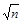
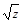
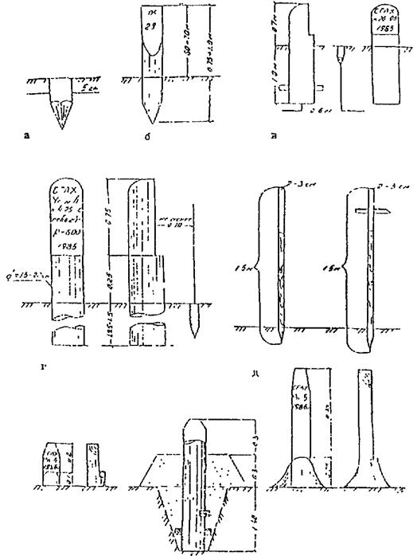

ВЕДОМСТВЕННЫЕ СТРОИТЕЛЬНЫЕ НОРМЫ
ИНСТРУКЦИЯ
ПО ПРОИЗВОДСТВУ ИЗЫСКАНИЙ
ЛЕСОХОЗЯЙСТВЕННЫХ АВТОМОБИЛЬНЫХ ДОРОГ
ВСН 05-87
ГОСЛЕСХОЗ СССР
Государственный комитет СССР по лесному хозяйству
Москва 1998
Разработана Всесоюзным государственным проектно-изыскательским институтом «Союзгипролесхоз» Гослесхоза СССР (исполнители: главный специалист Г.К. Филиппов и главный специалист О.Е. Кондратьева - разд. 5).
Внесена Всесоюзным государственным проектно-изыскательским институтом «Союзгипролесхоз».
Подготовлена к утверждению Управлением экспертизы проектов и смет и проектных работ Гослесхоза СССР (инж. С.А. Викуловский).
С введением в действие Инструкции по производству изысканий лесохозяйственных автомобильных дорог (ВСН 05-87) утрачивает силу Инструкция по производству изысканий лесохозяйственных автомобильных дорог (ВН 5-82).
Согласована с Госстроем СССР 5 ноября 1987 г., № A4-5529-8 и с ГУГК СССР 3 мая 1987 г., № 4-151.
|
Государственный комитет СССР по лесному хозяйству (Гослесхоз СССР) |
Ведомственные строительные нормы |
ВСН 05-87 |
|
Гослесхоз СССР |
||
|
Инструкция по производству изысканий лесохозяйственных автомобильных дорог |
Взамен BН 5-82 |
Настоящая Инструкция устанавливает основные требования к составу, содержанию и порядку производства изысканий для разработки предплановой (схемы транспортного освоения), предпроектной (технико-экономические обоснования и технико-экономические расчеты) и проектной документации (рабочие проекты, проекты и рабочая документация) на строительство новых и реконструкцию существующих автомобильных дорог предприятий лесного хозяйства.
Требования Инструкции необходимо соблюдать при экономических (включая лесотехнические работы), инженерно-геодезических, инженерно-геологических, инженерно-гидрометрических изысканиях, сборе данных для составления проекта организации строительства и смет, а также при камеральной обработке полевых материалов.
Инструкция не распространяется на работы по отводу земельных участков для строительства, по техническому обследованию и обмеру существующих зданий и сооружений, созданию геодезической разбивочной основы для строительства, производству исполнительных съемок, наблюдению за деформациями зданий и сооружений в процессе их строительства и эксплуатации. Эти работы могут выполняться специалистами изыскательских организаций только по отдельным договорам с заказчиком.
|
Внесена Всесоюзным проектно-изыскательским институтом «Союзгипролесхоз» |
Утверждена Государственным комитетом СССР по лесному хозяйству |
Срок
введения в действие |
При проектировании лесохозяйственных автомобильных дорог по СНиП 2.05.02-85 «Автомобильные дороги» (согласно ВСН 07-82) объем, состав и точность изыскательских работ должны отвечать требованиям ведомственных строительных норм, устанавливаемых для дорог общего пользования.
При производстве изысканий лесохозяйственных автомобильных дорог рекомендуется использовать следующую литературу:
Инструкция по проектированию лесохозяйственных автомобильных дорог (ВСН 07-82);
Инструкция по изысканиям, проектированию и строительству автомобильных дорог в районах распространения вечномерзлых грунтов (ВСН 85-74);
Инструкция по топографической съемке в масштабах 1:5000, 1:2000, 1:1000, 1:500 (ГКИНП-02-033-79);
Инструкция о Государственном геодезическом надзоре;
Инструкция по охране геодезических пунктов (ГКИНП-07-11-84);
Инженерные изыскания для строительства (СНиП 1.02.07-87);
Наставление по изысканиям и проектированию железнодорожных и автодорожных мостовых переходов через водотоки (НИМП-72);
государственные стандарты;
нормы, правила и инструкции по охране труда и технике безопасности, охране природной среды и т.д.
1.1. Изыскания должны обеспечивать получение необходимого для соответствующей стадии проектных работ комплекса исходных данных. На основе этих данных должны приниматься оптимальные технические решения по развитию дорожных сетей или строительству отдельных лесохозяйственных автомобильных дорог с учетом перспектив развития лесохозяйственного производства, существующих путей транспорта, экономических и природных условий района строительства.
1.2. Для технического руководства изыскательскими работами по каждому объекту назначается главный инженер проекта, несущий полную ответственность за правильность основных принципиальных решений (по выбору типа транспорта, размещению, структуре дорожной сети, основным параметрам дорог и т.п.), определяющих направленность изыскательских работ. За качество и точность изыскательских работ, а также полноту полевых материалов и сроки проведения изысканий, установленные техническим заданием на производство работ, несет ответственность начальник изыскательской партии (отряда).
1.3. Объем и состав изыскательских работ устанавливается в каждом конкретном случае самостоятельно в зависимости от уровня решаемой задачи, степени изученности района работ, сложности местных (топографических, гидрологических и др.) условий и стадии проектирования, для которой подготавливаются исходные данные и проводятся работы в полевых условиях. При этом работы, выполненные на предыдущей стадии изысканий, не должны включаться в состав работ последующих стадий изысканий, за исключением, при необходимости, сгущения геологических выработок и топографических съемок сложных участков трасс.
1.4. При изысканиях лесохозяйственных автомобильных дорог необходимо применять современные геодезические инструменты и геологическое оборудование, обеспечивающие достаточную точность инженерно-геодезических и геологических работ, прогрессивные методы производства изысканий и современные достижения науки для повышения уровня автоматизации технологического процесса изысканий.
1.5. Изыскательские работы выполняются в соответствии с техническим заданием на производство работ (обязательное приложение 7), которое выдается на весь комплекс изыскательских работ. В состав технического задания входят: основание для разработки, целевое назначение, местоположение территории, подлежащей транспортному освоению; объемы и структура грузов; типы транспортных средств; основные нормы проектирования; физические объемы по видам изысканий; особые требования к точности работ, состав партии и сроки выполнения работ, принципиальные направления дорог.
1.6. Для особо сложных условий* в соответствии с требованиями задания на проектирование и техническим заданием на производство работ может составляться программа инженерных изысканий, где отражаются: сведения по изученности природных условий района, обоснование категорий сложности, состава, объемов, методов, последовательности и взаимоувязки выполнения отдельных видов работ, особые требования к организации, технологии производства и безопасности работ.
* При особо сложных условиях (рельефных, гидрогеологических и др.) помимо традиционного состава работ требуются специальные исследования или методы производства изысканий.
1.7. Изыскательские работы следует выполнять при наличии разрешений, оформляемых заказчиком проектной документации:
- на право производства топографо-геодезических работ на территории населенных пунктов - от территориальных инспекций Госгеонадзора обязательно для работ по развитию сетей главной геодезической основы (триангуляции, полигонометрии, трилотерапии всех классов), сетей местного значения (аналитических сетей и полигонометрии всех разрядов), нивелирования всех классов независимо от объема работ и топографических съемок всех масштабов на площади более 1 км2 (сплошного массива);
- на производство инженерно-геологических изысканий автомобильных дорог протяженностью более 50 км - от территориальных производственных геологических объединений Министерства геологии.
Разрешения выдаются при наличии справки от соответствующих управлений по делам строительства и архитектуры при советах министров АССР, от областных (краевых) отделов по делам строительства и архитектуры, от городских и районных архитекторов о необходимости проектных работ.
1.8. Прочие топографо-геодезические работы, а также съемочные работы на площади до 1 км2 и работы, связанные с изысканиями трасс протяженностью до 5 км на территории населенных пунктов и в сельской местности производятся по разрешениям соответствующих управлений и отделов по делам строительства и архитектуры, городских и районных архитекторов.
1.9. В организационном отношении изыскания подразделяются на три периода: подготовительный (на стационаре и в полевых условиях), полевой и камеральный.
1.10. В подготовительный период на стационаре проводят сбор, обработку и изучение экономических, лесоустроительных, геологических, топографо-геодезических данных, анализ материалов схем развития лесного хозяйства, лесной промышленности, дорог общего пользования и других ведомств, лесоосушения, ТЭО, ТЭР на строительство объектов и т.д. выявление ожидаемых объемов изыскательских работ. На основе анализа собранных данных составляется техническое задание на производство работ и сметно-договорная документация.
В подготовительный период в начале полевых работ у заказчика и в утверждающей инстанции уточняются цели, задачи и объемы изыскательских работ, а при необходимости - техническое задание и сметно-договорная документация.
1.11. В полевой период проводятся: полный комплекс изыскательских работ в составе, объеме и с точностью, отвечающим требованиям технического задания на производство изысканий объекта на соответствующей стадии; основной объем камеральных работ, необходимых для обеспечения контроля качества и полноты полевых данных (согласно разд. 10); сдача изысканной трассы* и закрепительных знаков заказчику в полевых условиях.
* Для больших (более 25 км) и сложных объектов по требованию заказчика может быть организована приемка трассы по участкам.
В камеральный период на стационаре завершают лабораторные работы, составление полевой пояснительной записки и технических отчетов (при необходимости)*, производится окончательно компоновка материала, оформление и сдача его приемочной комиссии.
* Состав полевой пояснительной записки для стадий «Проект» и «Рабочий проект», приведенный в п. 2.18, может уточняться по требованию территориальных инспекций Госгеонадзора и органов архитектуры. Для других стадий состав пояснительной записки может быть сокращен в зависимости от сложности местных условий и объекта.
1.12. В составе изысканий следует предусмотреть необходимые инженерно-геодезические, инженерно-геологические и другие работы, обеспечивающие получение исчерпывающих материалов для разработки мероприятия по приведению всех нарушенных земель в пригодное для дальнейшей хозяйственной деятельности состояние. Эти мероприятия должны выполняться как после изысканий (своевременная засыпка шурфов, тампонирование скважин и т.п.), так и после строительства (сохранение плодородного слоя почвы, рекультивация резерва, карьеров и т.д.).
1.13. Окончанием изысканий по объекту считается дата сдачи (в соответствии с СТП СГЛХ 3.3.5-80) в архив полного комплекта обработанных, сброшюрованных по видам работ, принятых специальной комиссией проектной организации и исправленных по ее предложению полевых материалов.
2.1. Стадийность изыскательских работ должна соответствовать составу проектных разработок и устанавливается в техническом задании на производство работ для каждого объекта в зависимости от его сложности, местных природных условий и других факторов. Изыскания лесохозяйственных автодорог подразделяются на стадии:
предплановую - для разработки схем транспортного освоения (СТО) в составе схем развития лесного хозяйства областей, краев, АССР и их крупных регионов;
предпроектную - для разработки технико-экономических обоснований (ТЭО) или технико-экономических расчетов (ТЭР), устанавливающих целесообразность развития дорожных сетей отдельных зон тяготения или строительства отдельных дорог;
проектную - для разработки проектной документации на стадии «Проект»;
рабочую - для разработки проектной документации на стадии «Рабочая документация».
Для технически несложных объектов* изыскания, как правило, должны выполняться в одну стадию, когда проектная и рабочая стадии объединяются в одну.
* Под технически несложными понимаются объекты, для которых объем, состав изыскательских работ (в том числе оптимальное размещение трассы в натуре) и материалов, достаточных для разработки рабочей документации, могут быть получены без предварительных проектных разработок в пределах сроков проведения одностадийных изысканий.
Изыскания для разработки предплановых документов**.
2.2. Материалы изысканий для разработки схем транспортного освоения территорий лесного фонда предприятий, областей, краев и АССР должны содержать исчерпывающие исходные данные: о местных условиях строительства; качественном уровне работы лесохозяйственных средств транспорта; размещении и качественном состоянии существующих путей транспорта; разработке основных направлений развития путей лесохозяйственного транспорта; размещении основных дорог, объемов, стоимости и очередности их строительства в рассматриваемом регионе на перспективу.
** Аналогично могут осуществляться изыскания для разработки технико-экономических расчетов (ТЭР) развития дорожной сети отдельных предприятий лесного хозяйства или отдельных крупных зон тяготения с последующей разработкой проектной документации. В этом случае повышается точность исходных данных (характеристика лесного фонда, экономика работы транспортного цеха, местоположение, качество, количество и состояние существующих дорог), которые собирают непосредственно в предприятии и организациях района его расположения.
2.3. В состав основных исходных данных входят:
- характеристика особенностей природных условий района изысканий;
- местоположение и объемы грузообразующих и грузопотребляющих пунктов;
- местоположение, состав, протяжение и качественное состояние существующих путей транспорта;
- перспектива развития сети дорог общего пользования и других ведомств;
- характеристика уровня работы лесохозяйственного транспорта;
- состояние строительства и содержание лесохозяйственных дорог, а также обеспеченность района местными дорожно-строительными материалами;
- существующие и перспективные направления потоков грузов лесохозяйственных предприятий;
- предпочтительные направления развития лесохозяйственных путей транспорта в перспективе.
2.4. В состав полевых работ по рекогносцировке существующей дорожной сети на этой стадии входят визуальные обследования:
- устроенных лесохозяйственных автомобильных дорог (при отсутствии в предприятиях материалов об их инвентаризации или паспортизации), а также той части автомобильных дорог местного значения или других ведомств, которые совпадают с основными перспективными грузопотоками лесохозяйственных предприятий, для выявления их качественного состояния и возможности использования лесохозяйственным транспортом, определения объемов реконструкции;
- отдельных грунтовых проездов, расположенных в основном в благоприятных рельефных и гидрогеологических условиях, для установления возможного уровня их использования в качестве дорог низших типов;
- особо сложных участков* наиболее важных магистральных направлений, определяющих принципиальное направление развития дорожной сети в целом в перспективе, когда это невозможно установить по топографическим картам, материалам лесоустройства, геологическим и другим данным.
* К этим участкам относятся: перевальные ходы в особо трудных горных районах, сильно заболоченная местность, особо сложные мостовые переходы через водотоки. Сложные участки обследуются специалистами - дорожником и геологом.
2.5. По окончании выполненных работ представляются**:
- пояснительная записка о природных и экономических данных района, условиях строительства, характеристика лесного фонда, объемах лесохозяйственного производства, эффективности работы транспортных средств и др.;
- данные о существующей обеспеченности территории лесного фонда путями транспорта; местоположение существующих дорог приводится на схемах лесхозов масштаба 1:100000;
- данные о качестве и состоянии существующих дорог, а также специальная ведомость, отражающая фактические и перспективные объемы и направления грузопотоков.
** Детальный состав материалов и порядок выполнения изысканий приводятся в Указаниях по разработке схем транспортного освоения территории лесов, находящихся в ведении государственных органов лесного хозяйства автономных республик, краев, областей (Союзгипролесхоз, 1984).
Изыскания для разработки предпроектных документов.
2.6. Изыскания на предпроектной стадии осуществляются для разработки технико-экономических обоснований (ТЭО) или технико-экономических расчетов (ТЭР) строительства с целью уточнения принятых в схемах транспортного освоения технических решений по размещению дорожной сети отдельной зоны тяготения или отдельного объекта, подтверждения целесообразности ее строительства, а также выбора направления трасс*** и установления основных технико-экономических показателей и качественных характеристик отдельных дорог первой очереди строительства.
*** Выбор направления трассы осуществляется согласно требованиям СНиП 1.02.01-85 (п. 1.16) и Указаниям о порядке разработки и утверждения технико-экономических расчетов, обосновывающих хозяйственную необходимость и экономическую целесообразность строительства предприятий, зданий и сооружений (п. 3), утвержденным Госпланом СССР, Госстроем СССР 16 мая 1985 г., № 116/68.
2.7. В состав изысканий на этой стадии входят:
- сбор экономических, топографических, геологических, лесотехнических, природных данных, а также директивных документов о перспективе развития различных видов лесохозяйственного производства на осваиваемой территории (в зоне тяготения);
- камеральное трассирование вариантов прокладки трассы по топографическим картам (если это не выполнено на стадии разработки схем транспортного освоения);
- натурное обследование всех (за исключением дорог общего пользования) существующих автомобильных дорог (на которые отсутствуют материалы инвентаризации или паспортизации), расположенных в границах осваиваемой зоны тяготения или отдельной дороги, намечаемой к реконструкции, с установлением местоположения дороги, основных параметров, поперечного профиля, состояния земляного полотна, дорожной одежды, искусственных сооружений, обстановки дороги, а также ее пропускной способности;
- натурное обследование автомобильных дорог местной сети вне зоны тяготения, которые могут быть использованы для перевозок лесохозяйственных грузов, с целью выявления возможности использования или назначения их к реконструкции и установления их стоимости;
- натурное обследование сложных в природном отношении участков, предварительно намеченных (по топографическим картам с горизонталями и по геологическим данным) возможных вариантов прокладки трасс с целью выбора наиболее экономичного варианта.
2.8. В особо сложных рельефных или инженерно-геологических условиях (при отсутствии топографических и других карт нужного масштаба или невозможности при их помощи определить наиболее рациональное размещение дороги или ее отдельных участков, а также объемы работ, стоимость строительства, необходимые технико-экономические показатели и качественные характеристики по объекту) допускается производство тахеометрических ходов с инженерно-геологической рекогносцировкой.
2.9. По результатам полевых работ составляется пояснительная записка и подготавливаются графические материалы. Пояснительная записка включает:
- данные об экономике района строительства и ее влиянии на технические условия проекта;
- данные об условиях дорожного строительства (топографические, геологические, включая особые условия: сейсмичность, мерзлота, наличие карста, наледей, оползней и т.п.); обеспеченности строительства местными материалами (песком, гравием, щебнем и др.); наличии месторождений, их запасах, мощности и качестве материала;
- обоснование границ зоны тяготения, краткую характеристику лесного фонда, ожидаемые объемы производства, объемы перевозок и структуру грузов, состав и характеристику работы автопарка предприятия и перспективы его развития;
- качественную характеристику существующих путей транспорта (типы дорог, их параметры, состояние, пропускная способность);
- материалы согласований (акт выбора трассы, поставщики строительных материалов и конструкций, технические условия на примыкание, прокладку дорог по просекам и т.д.).
К записке прилагаются следующие графические материалы:
- схема существующих путей транспорта в границах зоны тяготения дорог, по которым ожидаются перевозки лесохозяйственных грузов, приводится на схеме лесхозов масштаба 1:100000;
- материалы камерально затрассированных по топографическим картам с горизонталями вариантов трасс (планы и продольные профили);
- материалы инструментальных рекогносцировочных изысканий трудных участков трасс первой очереди строительства (журналы, планы, продольные и поперечные профили тахеометрических ходов);
- инженерно-геологические карт по вариантам трасс, геолого-литологические разрезы на сложных участках;
- материалы натурных инструментальных обследований существующих дорог, намеченных к реконструкции;
- схемы существующих и ожидаемых в перспективе потоков лесохозяйственных грузов.
Изыскания для разработки проектной документации.
2.10. Порядок выполнения изысканий для разработки рабочего проекта или проекта и рабочей документации устанавливается при разработке предпроектной документации ТЭО или ТЭР строительства. При этом учитываются местные природные условия и требования лесохозяйственного производства, связанные с тем, что изыскания технически несложных объектов (дорог), как правило, должны выполняться в одну стадию.
2.11. При проектировании лесохозяйственных автомобильных дорог в особо сложных рельефных, инженерно-геологических условиях, на территориях населенных пунктов со сложной ситуацией, а также в составе комплексных проектов строительства лесохозяйственных предприятий и других крупных объектов, проектирование которых осуществляется в две стадии, изыскания выполняются раздельно для разработки проекта и рабочей документации.
В целях сокращения сроков проектирования (если все принципиальные вопросы по транспорту: объемам перевозок, размещению дорог, типам транспортных средств, очередности, организации строительства и т.д. - в составе комплекса решены на предпроектной стадии и не могут отрицательно повлиять на технические решения по всему объекту в целом) допускается основной объем изыскательских работ по дорогам первой очереди строительства выполнять к стадии разработки проекта. При этом полнота и точность работ (инженерно-геодезических, геологических и др.) должна в основном обеспечивать составление рабочей документации.
2.12. В случаях, когда для стадии «Проект» намечается освоение территории густой сетью дорог (более 0,5 км/км2 общей лесной площади), допускается часть дорог II и III типов (но не более 50 %) проектировать по аналогам-дорогам, прокладываемым по параллельным направлениям, а изыскания по ним ограничивать в несложных условиях - визуальным обследованием местности по камерально проложенным (по топографическим картам) направлениям. Последнее обеспечит более точную привязку пересечений водотоков, коммуникаций и т.д., а также уточнит геологические условия. По другой основной части дорог выполняется принятый для данной стадии комплекс инженерно-геологических и прочих работ.
В пересеченной местности визуальное обследование может быть заменено прокладкой по трассам тахеометрических ходов.
2.13. На стадии «Рабочая документация», как правило, проводятся следующие изыскания: вынос в натуру коротких участков трассы, запроектированных по планам с горизонталями; соответствующие геологические работы по новой трассе, уточнение или расширение топографических съемок трудных мест, проходка дополнительных скважин по местам расположения опор мостов и глубоких выемок, работы на участках со сложным геологическим строением и дополнительно запроектированными на стадии «Проект» искусственными сооружениями (железобетонные трубы, малые мосты и т.д.), а также работы по уточнению мощности местных месторождений: песка, гравия, щебня и т.д.
2.14. Состав и объем изыскательских работ для разработки рабочего проекта должен обеспечивать полноту обоснований основных технических решений, принимаемых на стадии «Проект», а также качественную разработку рабочей документации на строительство.
2.15. В состав подготовительных работ для разработки рабочего проекта входят:
на стационаре (в проектной организации до выезда в поле):
- получение от заказчика задания на проектирование и исходных данных, перечень которых приводится в обязательном приложении 1;
- сбор, обработка, изучение и анализ материалов по району изысканий (схем, ТЭО развития лесохозяйственного производства, транспортной сети, лесоосушения, лесозаготовок и т.п., геологических, лесоустроительных, топографо-геодезических и картографических данных, ТЭР целесообразности строительства отдельных дорог), а также материалов изысканий прошлых лет и других документов;
- составление предварительной схемы обеспечения путями транспорта территории предприятия или отдельной зоны тяготения, намеченных к освоению, или схемы размещения отдельной дороги с выделением участков первой очереди строительства, подлежащих изысканиям;
- установление состава и объемов изыскательских работ*;
- составление технического задания на производство работ (a для сложных объектов - программ работ) и сметно-договорной документации на проектно-изыскательские работы, а также общего плана и календарного графика полевых работ;
- комплектование партий в зависимости от объемов работ (рекомендуемое приложение 2), их обеспечение материалами, оборудованием, инструментами;
- в полевых условиях (по приезде на место работ) уточнение размещения намеченных на стационаре камерально трасс дорог, а при необходимости корректировка технического задания (или программы) и сметно-договорной документации на проектно-изыскательские работы.
* Определяется, как правило, по материалам предыдущей стадии: для разработки проекта и рабочего проекта - по материалам ТЭО или ТЭР; для разработки рабочей документации - по материалам проекта.
2.16. В полевой период изысканий для разработки рабочего проекта выполняют предусмотренные техническим заданием (или программой) полевые работы**, часть камеральных и лабораторных работ, необходимых для обеспечения контроля качества, полноты и точности полевых материалов.
** При проектировании густой сети дорог (более 0,5 км/км2) изыскания могут проводиться согласно п. 2.12.
В состав полевых работ входят:
- экономические изыскания***;
*** В экономические изыскания, кроме данных по экономике, входит сбор материалов для характеристики лесного фонда, о природных условиях и т.д.
- трассирование;
- поиск мест пересечения водотоков и сбор данных для проектирования искусственных сооружений (инженерно-гидрометеорологические изыскания);
- инженерно-геодезические работы;
- инженерно-геологические работы по трассам дорог, месторождениям дорожно-строительных материалов и для строительства искусственных сооружений;
- сбор сведений для составления проекта организации строительства и смет;
- согласования*;
* Согласования, осуществляемые при выборе направления трассы дороги (в том числе связанные с занятием земель), выполняются в случае, если они не были выполнены на предпроектной стадии изысканий или по истечении срока их действия.
- камеральная обработка полевых материалов.
2.17. В камеральный период в полевых условиях провидится окончательная обработка полевых журналов, ведомостей, чертежей (с нанесением геологических данных в карандаше на чертежи продольных и поперечных профилей, морфостворов, месторождений дорожно-строительных материалов), включая проектирование трудных мест трассы и составление полевой пояснительной записки. На стационаре завершаются лабораторные работы (по результатам которых уточняется геологическое строение места расположения трассы дороги, сосредоточенных резервов и месторождений строительных материалов), составление полевой пояснительной записки, окончательно оформляются полевые материалы и подготавливаются к сдаче в приемочную комиссию и архив.
2.18. В полевой пояснительной записке по изысканиям приводятся:
- основные положения технического задания и обоснования отступлений от задания на проектирование и от технического задания;
- перечень использованных при изысканиях лесоустроительных, геологических и топографо-геодезических материалов: топокарты, аэрофотосъемка и т.д.;
- состав партии, объемы и сроки работ, новые способы производства работ;
- краткая характеристика условий строительства;
- обоснование типа дороги и принятых основных ее параметров;
- обоснование выбранного основного направления трассы дороги и протяжения первой очереди строительства;
- обоснование выбора занимаемых земель, направлений и видов рекультивации;
- предложения по строительству земляного полотна, дорожной одежды и искусственных сооружений и устройству водоотвода;
- особые требования согласовывающих организаций. При наличии необоснованных требований вносят предложения о необходимости повторного согласования;
- условия пересечения инженерных сооружений и коммуникаций;
- краткая характеристика топографо-геодезических работ (состав, методы, объемы, особые условия, точность работ);
- краткая характеристика геологических работ (состав, методы, объемы, особые условия, основные рекомендации к проектированию);
- особенности грунтово-геологических условий района проложения дороги (дорог) и основные рекомендации и указания по техническим решениям строительства дороги на отдельных сложных (в геологическом отношении) участках трассы;
- замечания и предложения по результатам сдачи трассы заказчику.
2.19. По требованию органов, выдающих разрешение на производство изысканий, подготавливаются технические отчеты, а при объемах работ меньших, чем указано в п. 1.8, - пояснительные записки по топографо-геодезическим и геологическим работам. Указанные документы подлежат сдаче (в одном экземпляре) заказчику в составе, установленном соответствующими главами СНиП «Инженерные изыскания для строительства».
2.20. По окончании полевых работ представители заказчика и проектной организации составляют акт сдачи трассы дороги заказчику с указанием объемов по видам выполненных работ (согласно смете на проектно-изыскательские работы).
* При выполнении изысканий для разработки проекта или рабочего проекта, как правило, уточняются материалы ТЭО или ТЭР вследствие изменений, происшедших за период между утверждением ТЭО (ТЭР) и началом изысканий. Если эти работы не проводились на предпроектной стадии, то для разработки проекта (рабочего проекта) они выполняются в полном объеме. Для составления рабочей документации указанные работы не проводятся.
3.1. Основные задачи экономических изысканий:
- критическая оценка и уточнение основных положений здания на проектирование и выводов предпроектных перспективных работ;
- принятие (по собранным данным на стационаре и в начале полевых работ) основных принципиальных решений, устанавливающих местоположение границ зоны тяготения, основные направления грузопотоков, типы транспорта и подвижного состава, объем перевозок и состав грузов, типы (категории) дорог и определяющих направление конкретных работ по изысканиям дорожной сети или отдельной дороги;
- обеспечение проектных работ исходной документацией для обоснования принятых в рабочем проекте технических решений и подтверждения производственной необходимости в экономической целесообразности намечаемого строительства.
3.2. В состав экономических изысканий входят:
- изучение предплановых и предпроектных работ (схем, ТЭО, ТЭР) с целью выявления перспективы развития предприятия, в составе которого намечается строительство;
- уточнение границ зоны тяготения с учетом экономической эффективности работы транспорта и лесохозяйственного производства;
- уточнение объемов перевозок лесохозяйственных грузов и грузов предприятий других ведомств, а при необходимости и технического задания или программы на производство изысканий (осуществляется совместно с главным инженером проекта) с учетом очередности строительства всех путей сообщения в районе изысканий;
- сбор данных, характеризующих экономику предприятия, природные условия района изысканий, состояние лесного фонда, состав и объем лесохозяйственных работ в границах осваиваемой зоны тяготения, обеспеченность территории предприятия и зоны тяготения путями транспорта;
- разработка совместно с главным инженером проекта принципиальной схемы транспортного освоения зоны тяготения;
- установление типа (категорий) и основных технических параметров дорог в зависимости от размещения объемов лесохозяйственных производств отдельных объектов и сооружений, интересов организаций других ведомств;
- согласование состава и границ зоны тяготения, перспективного объема перевозок, принципиальной схемы транспортного освоения и ее первой очереди строительства.
3.3. Оценка качества и полноты полевых материалов экономических изысканий производится с точки зрения:
- правильности принятых предварительных решений по основным принципиальным вопросам проектирования дорог (дороги), определившим направление изысканий, при составлении технического задания на производство изысканий;
- возможности обоснования технических решений в ТЭО (ТЭР), проекте или рабочем проекте, производственной необходимости и экономической целесообразности намечаемого строительства.
4.1. Основные задачи, подлежащие решению при трассировании:
- рациональное размещение дорожной сети или отдельной дороги с целью получения минимальной грузовой работы лесохозяйственного транспорта при минимальных затратах на строительство в зависимости от направлений потоков лесохозяйственных грузов в перспективе, местоположения существующих путей транспорта, расположения крупных естественных (озера, болота и т.д.) и искусственных (поселки, карьеры и т.п.) преград с учетом интересов других организаций района;
- поиск наилучшего местоположения оси дороги на местности в зависимости от рельефных и инженерно-геологических условий.
4.2. В состав трассировочных работ входят:
- анализ и оценка условий дорожного строительства (рельефных, геологических, гидрологических, ситуационных и др.);
- камеральное трассирование по топографическим картам вариантов проложения дорожных трасс для полевого обследования;
- полевое обследование - рекогносцировка вариантов трассы: глазомерная, полуинструментальная или инструментальная; топографическая съемка местности для выбора основного варианта;
- установление точек ограничения трассирования на местности (обрывы, озера, болота, пересечения водотоков, коммуникаций и т.д.);
- окончательная укладка оси дороги на местности по выбранному варианту*;
- полевая проектировка сложных участков, a при необходимости переукладка отдельных участков трассы на местности.
* Для стадии «Проект» допускается предварительное трассирование (прокладка теодолитного хода с топографической съемкой полосы всей дороги или ее наиболее сложных участков).
4.3. При простом рельефе и благоприятных инженерно-геологических условиях выполняют полевое рекогносцировочное обследование. В этом случае производится глазомерная съемка местности по намеченным камерально вариантам трассы дороги с выбором на местности и нанесением на картографический материал точек ограничения трассирования (контрольных точек) у естественных или искусственных препятствий, по которым корректируется камерально выбранная трасса дороги для ее окончательной укладки на местности.
4.4. В холмистой, пересеченной местности полевое рекогносцировочное обследование может осуществляться с применением буссолей, гониометров, эклиметров и других приборов.
4.5. В сложных рельефных или инженерно-геологических условиях (косогорные, водораздельные ходы, наличие большой заболоченности или сложной гидрографической сети в районе изысканий и т.д.) увязка точек, ограничивающих трассирование, для установления оптимального положения трассы дороги осуществляется, как правило, при помощи тахеометрических ходов, а при необходимости - со съемкой поперечных профилей.
4.6. Результаты полевого рекогносцировочного обследования наносятся на картографический материал (топографические карты, лесоустроительные планы, инженерно-геологические карты), а рекомендации заносятся в полевые журналы рекогносцировочных обследований. В результате инструментальной рекогносцировки вычерчиваются упрощенные продольные профили и планы линий тахеометрических ходов, а при необходимости и поперечные профили, на основе которых корректируется положение оси дороги на местности.
4.7. Непосредственная укладка трассы магистральных лесохозяйственных дорог на местности должна осуществляться с максимальным приближением ее к экономической оси зоны тяготения*, определенной в схеме транспортного освоения или на предпроектной стадии в ТЭР (ТЭО), с учетом требований акта предварительного выбора направления дороги.
* Под экономической осью зоны тяготения понимается наиболее рациональное расположение трассы дороги исходя из размещения грузообразующих точек в зоне тяготения, отдельных производств, сооружений и пункта примыкания дороги.
4.8. В благоприятных рельефных условиях и если это не влечет за собой необоснованного удорожания строительства, трассы дорог II и III типа необходимо совмещать с направлениями квартальных просек.
4.9. При вольных ходах (когда естественные уклоны местности в намечаемом направлении положе руководящего уклона**) главная задача трассирования заключается в укладке трассы между выбранными на местности контрольными точками с минимальными отклонениями от кратчайшего общего направления с целью получения минимального протяжения дороги и минимальной грузовой работы транспорта.
** Руководящий уклон - максимально допустимый уклон, подъем (спуск) в продольном профиле дороги.
4.10. В горных условиях сеть лесохозяйственных дорог должна размещаться так, чтобы транспортировка основной массы грузов (с учетом их доставки к дороге и от нее) осуществлялась, если это технически возможно и экономически целесообразно, по кратчайшему расстоянию сверху вниз.
При соответствующем технико-экономическом обосновании в горных районах прокладка дорог может выполняться по водоразделам и через перевалы.
4.11. При напряженных ходах главная задача трассирования преодолеть высотное препятствие с помощью заданных уклонов без потерь высот*. В этом случае необходимо руководствоваться следующими правилами:
- длина трассы должна быть минимальной;
- местоположение и величина углов поворота трассы должны максимально способствовать наиболее эффективному использованию принятого для данной дороги руководящего (максимального) подъема (спуска) с минимально возможными рабочими отметками в продольном профиле дороги;
- радиусы горизонтальных кривых должны обеспечивать безопасность работы транспортных средств при заданных показателях видимости, расчетной скорости движения и габаритов транспортных средств.
* При напряженных перевальных ходах, когда существующие уклоны местности в намечаемом направлении дороги равны или превышают руководящий подъем (спуск), требуется искусственное развитие трассы.
4.12. Окончательная укладка оси дороги заключается в экономичном проложении трассы отдельными прямыми линиями в наиболее благоприятных рельефных и геологических условиях между контрольными точками. Эти точки устанавливаются у ограничивающих трассирование естественных и искусственных препятствий с целью получения минимального количества углов поворота, минимального протяжения и минимальной стоимости строительства дороги. Во всех случаях должен выдерживаться основной принцип трассирования дорог: «Нет угла, если внутри него нет препятствия».
4.13. При окончательной укладке оси дороги в пределах границ зеленых зон городов, крупных населенных пунктов, лесопарков и т.п. трасса дороги должна органично вписываться в рельеф местности. В этом случае необходимо соблюдать принципы ландшафтного проектирования автомобильных дорог.
4.14. На участках с особо сложными условиями местности (при прокладке напряженных перевальных ходов по крутым, сильно пересеченным склонам, скальным косогорам, оползням, осыпям и т.д. или в плоском, густо залесенном рельефе с затрудненным водоотводом, а также при пересечении сложных водотоков), когда окончательная оптимальная укладка трассы на местности к стадии «Рабочий проект» без предварительной проектной проработки затруднительна или невозможна в полевых условиях, может осуществляться полевое проектирование продольных профилей. Эти профили получают в результате камерального трассирования оси дороги по крупномасштабным топографическим планам (1:1000 - 1:2000), подготовленным по выполненной специально для этой цели топографической (преимущественно тахеометрической) съемке полосы будущей трассы. Ширина полосы съемки устанавливается в каждом конкретном случае самостоятельно.
4.15. Полевая проектировка продольного профиля дорог проводится с целью:
- окончательной проверки рациональности прокладки трассы дороги на местности;
- установления местоположения искусственных сооружений и сосредоточенных объемов земляных работ по возведению земляного полотна;
- уточнения заданий и объемов буровых работ по трассе и поиска сосредоточенных резервов грунта и местных дорожно-строительных материалов.
5.1. При трассировании лесохозяйственных автомобильных дорог следует использовать мостовые переходы ближайших автомобильных дорог через большие водные преграды, глубокие ущелья, железнодорожные линии МПС и т.п.
5.2. Настоящий раздел определяет объем и состав изыскательских работ, необходимых для разработки проектно-сметной документации на строительство малых водопропускных сооружений и средних мостов на лесохозяйственных автомобильных дорогах. Методы и способы производства работ и расчетов приводятся в Наставлениях по проектированию железнодорожных и автодорожных мостовых переходов через водотоки (НИМП-72).
5.3. В случаях трассирования переходов через малоизученные водотоки при особо сложных режимах рек или при активных русловых процессах, а также участков трассы, находящихся в зоне подтопления и проходящих по долинам горных рек, перечень и объем топографических, гидрометеорологических*, инженерно-геологических изысканий определяются главным инженером проекта в зависимости от изученности района строительства, стадийности проектирования и в соответствии с требованиями действующих инструкций и наставлений на отдельные виды работ.
* Сведения по гидрологии, гидрографии, геоморфологии, климату должны быть достаточны для оптимальных технических решений. При проектировании искусственных сооружений в составе дороги сведения о климате района изысканий могут быть получены при сборе экономических данных.
5.4. Створ мостового перехода следует размещать на участках долины реки с наиболее узкими поймами, расположенными на высоких отметках. Направление створа перехода выбирают нормальным к направлению долины и русла реки и, по возможности, приближают его к прямой воздушного направления трассы. Углы поворотов трассы в пределах поймы допускаются только при их технико-экономическом обосновании.
Косое пересечение реки, а также расположение моста на кривой должны быть обоснованы сравнением вариантов.
5.5. Следует избегать прокладки трассы по конусам выноса селевых водотоков. Селевые водотоки наиболее целесообразно пересекать с таким расчетом, чтобы можно было пропустить селевой поток под сооружением дороги. Для этого трассу следует прокладывать нормально к потоку выше места изменения уклонов выраженного (в косогорах) лога и конуса выноса (как правило, в начале конуса выноса) так, чтобы береговые опоры можно было бы располагать на коренных берегах косогоров. При невозможности или нецелесообразности выполнения этого требования трассу располагают по нормали к образующей конуса, по кривой с углом поворота, равным углу растечения потока на конусе выноса, с последующим устройством брода-лотка.
5.6. Прокладку трассы по косогорам в местах устройства бродов-лотков необходимо осуществлять таким образом, чтобы была возможность создания искусственного углубления при помощи обратных уклонов в продольном профиле величиной не менее 40 ‰ и не более руководящего, принятого для данной дороги.
5.7. В состав изысканий для разработки предпроектных документов ТЭО (ТЭР) мостовых переходов, лесохозяйственной автодороги входят:
- сбор материалов: топографических карт, лесоустроительных, геологических, климатических и других данных по объекту изысканий, а также сведений о работе существующих мостовых переходов через пересекаемый водоток;
- трассирование вариантов перехода по планам и картам;
- определение границ водосборных бассейнов;
- расчеты стока;
- составление по картографическим данным профилей живых сечений и морфостворов по вариантам перехода;
- выбор наиболее конкурентоспособного варианта для последующего полевого трассирования.
В сложных условиях (при устройстве сооружений через железнодорожные пути, в пределах застроенных территорий, на водотоках с блуждающими и меандрирующими руслами, на поймах с многорукавностыо и т.д., при отсутствии картографического материала нужного масштаба и др.) может проводиться полевое обследование вариантов, а также инструментальные или полуинструментальные работы по уточнению живого сечения водотока, морфостворов и геологического строения места перехода.
5.8. В состав изыскания для разработки проекта входят:
- обследование камерально затрассированных по топографическим картам и геологическим данным мест перехода и выбор наилучшего варианта пересечения водотока;
- топографическая съемка места мостового перехода в масштабе 1:1000 - 1:2000 (в зависимости от сложности местных условий) площадью, достаточной для проектирования регуляционных сооружений, дноукрепительных работ, размещения морфостворов, а также площадки складирования строительных конструкций;
- инженерно-геологическое обследование выбранного места перехода (не менее трех выработок: две - по берегам, одна - в русле).
5.9. Состав изысканий для разработки рабочей документации определяется главным инженером проекта после разработки и утверждения проекта и может включать:
- вынос в натуру оси мостового перехода (в случае, когда ось перехода на стадии «Проект» трассировалась по плану с горизонталями);
- проходку геологических выработок под каждую опору запроектированного моста, регуляционные сооружения и подходы к мосту;
- дополнительную топографическую съемку под регуляционные, водоотводные и другие сооружения, если выполненной для стадии «Проект» съемки недостаточно.
5.10. В состав изысканий для разработки рабочего проекта мостового перехода должны входить работы, выполняемые для стадий «Проект» и «Рабочая документация».
5.11. Для разработки рабочих проектов малых искусственных сооружений, как правило, выполняются:
- обследование камерально затрассированных по топографическим картам мест переходов и выбор наилучшего варианта;
- комплекс топографо-геодезических, гидрометеорологических работ, приведенных в табл. 1, и инженерно-геологических работ (табл. 3).
Таблица 1
|
Наименование данных |
Методы определения данных |
||
|
для малых водотоков с площадью водосбора до 100 км2 |
для средних водотоков с площадью водосбора 100-250 км2 |
||
|
1 |
2 |
3 |
4 |
|
1 |
Площадь бассейнов (выше сооружения)*. Сводный план бассейнов на всем протяжении трассы дороги |
Определяется по картам с горизонталями масштаба 1:10000 - 1:100000, по картографическим материалам лесоустройства. План бассейнов составляется по картам наиболее крупного масштаба |
Определяется по картам масштаба 1:25000 - 1:100000 |
|
2 |
Длина бассейна* |
Длина бассейна от сооружения по главному тальвегу определяется по картам с горизонталями или по картографическим материалам в масштабах 1:10000 - 1:100000. Результаты заносятся в ведомость расчетных данных искусственных сооружений |
|
|
3 |
Средневзвешенный уклон главного лога* |
Определяется по карте в горизонталях в масштабах 1:10000 - 1:100000. Результаты заносятся в ведомость расчетных данных по искусственным сооружениям |
|
|
4 |
Уклон лога у сооружения (уклон главного русла и поймы реки для средних и больших водотоков) |
Нивелирный ход в одном направлении с промером расстояний лентой на 100-150 м вверх и 50-100 м вниз по течению от оси перехода. Результаты заносятся в ведомость расчетных данных |
Определяется по плану мостового перехода (см. п. 14 настоящей таблицы) |
|
5 |
Морфологическая характеристика бассейна (главного русла и пойм средних водотоков) |
Характер растительного покрова, процент залесенности, заболоченности, процент озер от общей площади водосбора, характеристика почв, наличие скальных обнажений и другие показатели, определяющие условия стока и впитываемость почвы. Характеристика дается по картографическим материалам и в натуре с записью в полевой пояснительной записке и ведомости расчетных данных по искусственным сооружениям. Морфологическая характеристика главного русла и поймы реки в зависимости от оказываемого ими сопротивления течению устанавливается применительно к коэффициентам шероховатости |
|
|
6 |
Коэффициент шероховатости главного русла и поймы |
Коэффициенты шероховатости главного русла и поймы выявляются сопоставлением натурных показателей с показателями таблиц коэффициентов шероховатости и заносятся в ведомость расчетных данных искусственных сооружений |
|
|
7 |
Характеристика грунта: а) в русле водотока |
Определяется в результате инженерно-геологической съемки по трассе в месте перехода через водоток для установления размывов (общего и местного) |
|
|
б) на площади бассейна |
То же для установления категории впитывания по процентному содержанию песка из взятых по бассейну двух-трех проб с замером толщины слоя, окрашенного гумусом |
||
|
8 |
Поперечные профили долины, морфостворы, живые сечения |
Снимаются в натуре и вычерчиваются в масштабе 1:100 - 1:200 на длину большую (на 10-20 м), чем максимально возможная ширина водотока в период паводка |
Снимаются на местности до отметок расчетного УВВ плюс 1 м. Живое сечение промеряется вертикальными промерами через 2-5 м и вычерчивается в масштабе 1:100 или 1:200 (работы выполняются одновременно со съемкой мостового перехода). При косых пересечениях водотока в месте перехода разбивается дополнительный морфоствор нормально к направлению потока в период паводка на прямолинейном участке реки |
|
9 |
Данные о возможности водоотвода |
Производится обследование возможности объединения нескольких бассейнов в одно искусственное сооружение, устройства нагорных канав, искусственных русел, отвода воды из резервов к сооружению и т.д. Результаты обследования приводятся в записке по изысканиям |
Не собираются |
|
10 |
Акт опроса о режиме реки |
Не составляется для площадей до 20 км2 |
Составляется акт о режиме рек в районе перехода |
|
11 |
Сведения о скоростях течения воды на период съемки |
Независимо от того, производятся ли на водотоке специальные гидрометрические наблюдения, на всех постоянно действующих водотоках замеряют скорость течения воды на момент съемки |
|
|
12 |
Данные о ледоходе |
Не собираются |
Устанавливаются уровни высокого и низкого ледохода, уровень ледостава, направление движения ледохода, толщина и размеры льдин, время и продолжительность ледохода, время ледостава. Результаты заносятся в акт о режиме реки и в пояснительную записку |
|
13 |
Сведения о сплаве и судоходстве |
Не собираются |
Устанавливается характер сплава (молевой или плотовой), уровни сплава и размеры плотов. Производится согласование со сплавными организациями о величине и количестве сплавных пролетов и о возвышении пролетных строений над сплавным уровнем. На судоходных реках определяется класс реки; производятся согласования с управлением пароходства. Результаты заносятся в пояснительную записку по переходу |
|
План мостового перехода |
Снимается в пределах ширины полосы съемки вдоль трассы дороги, а при необходимости устройства отводящих и подводящих русел - в границах, необходимых для разработки проекта. Масштаб съемки 1:1000, в особых случаях (согласно п. 6.28) - 1:500 |
Снимается по ширине долины до отметок максимального УВВ плюс 1 м. По длине участок съемки должен обеспечивать проектирование необходимых регуляционных и дноуглубительных работ, но не менее чем на одну-две величины отверстия моста вверх и 0,75-1,5 отверстия вниз по течению, не менее 100 м в каждую сторону. Масштаб съемки 1:1000 - 1:2000, высота сечения рельефа 0,5-1,0 м. Промеры глубин производятся инструментальным способом при расстоянии между промерными створами 1-2 м по ширине реки. Мгновенный уклон водной поверхности определяется технической нивелировкой |
|
|
15 |
Сведения о существующих искусственных сооружениях |
Отмечается состояние сооружения, недостаточность или избыточность отверстия, приводятся намечаемые мероприятия в случае пригодности сооружения для дальнейшей его эксплуатации, а также предложения о замене его другим типом |
Обследуются существующие мосты для сбора всех необходимых материалов при составлении проектов возможной реконструкции мостов или их замене сооружениями другого типа. На основании обследования для каждого моста в отдельности приводятся: категория перехода по водопропускной способности; гидрогеологическая характеристика водотока (с приложением поперечного профиля должны по оси моста, на котором должны быть нанесены уровни меженных и высоких вод, ледохода и ледостава, описание грунтов дна водотока) |
* В случаях размещения сооружений на малых водотоках с водосбором менее 0,25 км2 в непосредственной близости или в границах населенных мест, промплощадок и т.п. показатели площади, длины бассейна и средневзвешенного уклона лога (при недостаточности данных в имеющихся картах) получают в результате инструментального обхода бассейнов.
6.1. Состав и объемы инженерно-геодезических работ устанавливаются главным инженером проекта конкретно для каждого объекта в зависимости от значения проектируемой дороги, сложности условий местности и стадии разработки проектной документации, для которой выполняются изыскания.
6.2. В разделе приводятся основные требования по составу и точности инженерно-геодезических работ для наиболее общих случаев изысканий в зависимости от стадии проектирования.
6.3. Инженерно-геодезические работы должны обеспечивать получение исходных материалов, необходимых (в совокупности с экономическими, геологическими и другими данными) для выбора, сравнения и оценки конкурентоспособных вариантов трассы, определения оптимального варианта, разработки проектной документации по оптимальному варианту.
6.4. Для разработки предплановой документации (схем транспортного освоения) инженерно-геодезические работы не производятся. Выполняется в основном камеральное трассирование вариантов трасс по топографическим картам с горизонталями в масштабе 1:10000 - 1:50000. Для особо сложных мест (перевальных ходов, на скальных участках), где необходима проверка технической возможности и экономической целесообразности прокладки дороги, выполняют глазомерную или полуинструментальную съемку местности.
6.5. На предпроектной стадии изысканий для разработки ТЭО или ТЭР, как правило, выполняют камеральное трассирование конкурентоспособных вариантов по топографическим картам с горизонталями масштаба 1:10000 - 1:25000 (в совокупности с лесоустроительными картографическими материалами и картами-схемами инженерно-геологических условий района прокладки трасс) для выбора основного направления дороги (дорог) на основе технико-экономического сравнения вариантов.
На сложных или ключевых (эталонных) участках по вариантам могут быть проложены тахеометрические ходы с набором шкетов в характерных местах рельефа, с зарисовкой ситуации в полосе 100-150 м и съемкой отдельных точек в поперечном профиле для осветления местности.
6.6. В состав инженерно-геодезических работ для стадии «Проект» входят: прокладка теодолитного хода в непосредственной близости от экономической оси зоны тяготения (±50 м); пикетаж по оси хода с закреплением характерных точек местности; нивелирование характерных точек по оси хода; топографическая съемка (при необходимости) притрассовой полосы шириной 100 м; привязка трассы к квартальной сети, границам землепользования, пунктам опорной геодезической сети (пп. 6.20-6.23); закрепление трассы в натуре.
6.7. При прокладке трасс в особо благоприятных рельефных (равнинной и слабохолмистой местности) и гидрогеологических (отсутствие слабых грунтов, заболоченных мест и т.д.) условиях с обеспеченным водоотводом, когда местоположение трассы в период изысканий к проекту установлено окончательно, допускается на этих участках (после выполнения пикетажа с разбивкой горизонтальных кривых и нивелирования характерных точек по оси хода) ограничиваться съемкой поперечных профилей на всех характерных точках, а топографическую съемку выполнять только для трудных мест трассы.
6.8. При значительной оторванности изыскиваемых объектов от жилых мест и при больших протяжениях трасс (более 25 км) для стадии «Проект» по согласованию с заказчиком (в целях сокращения сроков) может допускаться ключевой метод производства топографо-геодезических работ. На основании камерального трассирования возможных вариантов трассы дороги по топографическим картам с горизонталями масштаба 1:10000 - 1:25000, материалов аэрофотосъемки и рекогносцировочного полевого обследования выбранного варианта трассы отбираются ключевые участки, которые можно распространить впоследствии на всю дорогу. По ключевым участкам трассы топографо-геодезические работы, в зависимости от их необходимой точности и сложности местных условий, выполняются согласно требованиям п. 6.6 или 6.10.
6.9. Для стадии «Рабочая документация» объем топографо-геодезических работ устанавливается после разработки проекта по всей дороге или ее участкам в зависимости от состава работ, выполняемого для проекта, и принятых технических решений. Если запроектированная трасса по топографическим планам масштаба 1:1000 - 1:5000 выкладывается в натуру в полном объеме, то состав топографо-геодезических работ должен удовлетворять требованиям п. 6.10, за исключением топографической съемки сложных мест и поперечных профилей, которые выполнены ранее к предыдущей стадии. В случаях прокладки от дороги по косогорам крутизной 1:3 и более или по существующей дороге производится топографическая съемка поперечных профилей на всех характерных точках по трассе на ширину, обеспечивающую размещение поперечного сечения земляного полотна дороги. Если состав изысканий для стадии «Проект» выполнен в объеме требований п. 6.10, то специальные инженерно-геодезические работы для стадии «Рабочая документация» не проводятся.
6.10. В состав инженерно-геодезических работ при изысканиях лесохозяйственных автомобильных дорог для стадии «Рабочий проект» входят:
а) прокладка теодолитного хода по оси дороги, уложенной на местности;
б) пикетаж по трассе с разбивкой горизонтальных кривых;
в) нивелирование закрепленных точек по оси дороги;
г) топографическая съемка поперечных профилей в притрассовой полосе;
д) топографическая съемка сложных участков трассы*, карьеров и сосредоточенных резервов грунта и т.д.;
е) закрепление углов поворота, установка створных столбов и реперов;
ж) привязка трассы к квартальной сети, границам землепользования, а при необходимости к пунктам государственной геодезической сети;
з) привязка к пунктам нивелирной сети;
и) камеральная обработка полевых материалов.
* К сложным участкам трассы относятся: места переходов через водотоки; косогорные и перевальные ходы, оползни, осыпи, территории с карстовыми явлениями; берега, подмываемые водотоками; места с продольными уклонами, превышающими нормативные, и с минимально допустимыми радиусами горизонтальных кривых; застроенные территории; примыкания и съезды; пересечения автомобильных и железных дорог; участки с затрудненным водоотводом; места расположения серпантин и другие участки, где должны проектироваться специальные устройства: подводящие и отводящие русла, подпорные стенки, контрбанкеты и т.п.
6.11. В условиях горной или резкопересеченной местности, где промер длин линий, разбивка пикетажа и геометрическое нивелирование по трассе недостаточно производительны, допускается использовать теодолиты (тахеометры) в едином технологическом процессе. Точность измерений не должна быть ниже указанной в п. 6.31 для горных условий. При определении расстояний нитяными дальномерами допускается фиксировать на трассе только переломные точки рельефа (без установления пикетов через 100 м) и характерные точки ситуации.
6.12. На сложных участках трассы при одностадийных изысканиях, когда ее окончательная укладка без предварительных проектных разработок затруднительна, рекомендуется вынос оси дороги в натуру в следующей последовательности:
- топографическая съемка полосы трассы на участке или съемка поперечных профилей в полосе трассы по характерным точкам продольного профиля теодолитного хода;
- вычерчивание планов в горизонталях масштаба 1:500 - 1:2000 или плана линий и продольного профиля теодолитного хода (в этих же масштабах) и поперечных профилей масштаба 1:200 - 1:100 (в зависимости от сложности местных условий);
- камеральное трассирование по плану с горизонталями или на основе смещения по поперечным профилям оси дороги;
- выкладка трассы в натуру, пикетаж, нивелирование;
- вычерчивание и полевое проектирование продольных профилей до и после выкладки трассы дороги в натуре.
При этом первоначальный теодолитный ход в пределах сложных участков используется как базис для съемки, а пикетаж по нему выполняется без пикетов и разбивки горизонтальных кривых на углах поворота.
6.13. В сложных условиях на стадиях «Рабочий проект» и «Рабочая документация» разрешается камеральное проектирование автодорог по выполненным в период изысканий планам с горизонталями масштаба 1:1000 - 1:5000 с последующим выносом трассы дороги в натуру до начала строительства.
При выносе трассы в натуру строительной организацией затраты на эти цели предусматриваются в сметах на строительство.
6.14. Вешение трассы производится по теодолиту. В равнинных условиях вешение допускается осуществлять при помощи бинокля способом «на себя». При этом последующие вехи устанавливаются, когда в створе имеется не менее трех хорошо видимых вех.
6.15. Измерение углов поворота при окончательном выносе трассы в натуру осуществляется теодолитами (технической точности) одним полным приемом (двумя полуприемами с перестановкой румба с точностью, приведенной в табл. 2) и измерением прямого и обратного румбов линий, образующих угол.
Измерения углов поворота фиксируются в угломерном журнале с приведением следующих данных: порядковый номер угла, его величина и направление, наблюденный и вычисленный румб, величина принятого радиуса горизонтальной кривой и ее элементы.
6.16. Длины линий измеряют дважды стальной лентой с точностью, приведенной в табл. 2. При величие угла наклона местности более 3° для получения горизонтального проложения вводятся соответствующие поправки. Для второго промера допускается использовать стальную рулетку или нитяной дальномер.
Одновременно с измерением длин линий производятся:
- разбивка пикетов через 100 м с расстановкой плюсовых точек в продольном профиле на всех характерных элементах рельефа;
- разбивка элементов горизонтальных кривых;
- глазомерная съемка ситуации в полосе шириной 100 м, а при необходимости с дополнительным промером в сторону от оси дороги;
- ведение пикетажного журнала;
- закрепление трассы специальными знаками (на углах поворота и створных точках на прямолинейных участках через 1 км, но в переделах видимости)*, сторожками и точками (на всех переломах местности), заменками вех и обращенными к трассе затесами на ближайших деревьях (рекомендуемое приложение 8).
* Закрепление трассы производится: деревянными столбами, металлическими уголками, трубами, каменными пирамидами и т.д., которые устанавливаются на углах поворота, конечных точках трассы, створных точках длинных прямых линий.
При наличии естественных (деревья, выступы скал и т.д.) и искусственных (опоры линий связи, цоколи фундаментов зданий и т.д.) ориентиров допускается закрепление углов поворота путем привязки точек угла линейными засечками, но не менее чем к трем ориентирам на каждую точку угла.
6.17. Длины линий, недоступные для непосредственных измерений лентой, измеряются нитяным дальномером в прямом и обратном направлении или определяются аналитически с разбивкой и измерением лентой двух базисов (с точностью, приведенной в табл. 2).
6.18. При окончательных изысканиях трассы, как правило, производится нивелирование в два хода или в прямом и обратном направлениях.
Разрешается одиночное нивелирование трассы по двусторонним рейкам или односторонним с переменой горизонта инструмента не менее чем на 10 см в следующих случаях:
- при проложении хода между реперами (пунктами) нивелирной сети с обязательной привязкой к ним (согласно п. 6.20) не реже чем через 30 км;
- при протяжении трасс до 5 км;
- при нивелировании замкнутых ходов (по трассам дорог) длиной до 40 км.
6.19. При нивелировании трассы двумя ходами первый нивелировщик фиксирует все точки пикетажа по трассе, а второй ход является контрольным, при котором измеряют только связующие точки для подтверждения правильности первого хода.
6.20. Исходными пунктами для нивелирования могут быть:
а) реперы или марки государственной нивелирной сети с отметками в Балтийской системе высот или реперы и марки других ведомств при их удалении от трассы до 5 км с привязкой к ним не реже чем через 30 км;
б) реперы, устанавливаемые в начале нивелирного хода (трассы) в условной системе с произвольно взятой отметкой начального пункта (если реперов, указанных в п. «а», нет).
6.21. При отсутствии в 5-километровой полосе пунктов опорной геодезической сети привязка трассы производится к существующим путям транспорта, границам землепользований, лесоустроительным знакам, при больших длинах трасс необходимо определять истинные азимуты сторон хода, но не реже чем через 15 км с точностью привязываемого хода (табл. 2).
6.22. При производстве изысканий на территории населенных пунктов, промышленных предприятий, а также на территориях разработки полезных ископаемых плановая и высотная привязка геодезической основы обязательна.
6.23. При изысканиях лесохозяйственных автомобильных дорог в составе комплекса лесохозяйственных объектов (лесоосушительные или оросительные сети, питомники, промышленные площадки и т.д.) принимается единая система высот.
6.24. Через каждые 2 км, а также в начале и конце трассы и на берегах водотоков, через которые намечается строительство средних мостов, устанавливаются реперы на деревянных столбах, пнях деревьев, выступах скал и т.д. за пределами строительной полосы отвода.
6.25. При окончательном выносе трассы в натуру и передаче высотных отметок на связующие точки теодолитами (в случаях, установленных п. 6.11) необходимо производить не менее двух измерений на каждую точку в прямом и обратном направлениях. При допустимой погрешности (см. табл. 2) принимается средняя величина превышения.
6.26. Съемка поперечных профилей*, в зависимости от сложности рельефа и их предназначения (проектирование земляного полотна, водоотвода, искусственных сооружений и т.п.), может выполняться геометрическим нивелированием, тахеометрической съемкой или ватерпасовкой и другими инструментами.
* Количество подлежащих съемке поперечных профилей и их длина зависят от их предназначения и устанавливаются для каждого конкретного участка трассы индивидуально ответственным производителем работ. При прокладке трасс по склонам крутизной 1:3 и более, а также для реконструкции дорог поперечные профили снимаются на всех характерных точках продольного профиля и рельефа на ширину, обеспечивающую размещение земляного полотна дороги.
Все записи должны фиксироваться в специальных журналах съемки поперечных профилей.
6.27. Закреплению подлежат только те поперечные профили, которые предназначаются для проектирования косогорных водопропускных труб, балконов или полубалконов, галерей для пропуска селей и других сложных сооружений. Эти поперечные профили закрепляются кольями или столбами с привязкой к трассе в плановом и высотном отношении. Закрепляются также живые сечения малых водотоков, морфостворы и гидростворы, разбиваемые по нормали к направлению течения на средних мостовых переходах.
6.28. Масштабы съемок на сложных участках трассы (п. 6.10, д) назначаются руководителем работ в каждом конкретном случае отдельно в зависимости от сложности рельефных, инженерно-геологических условий и назначения проектируемого сооружения. В наиболее общих случаях масштабы топографических съемок принимаются следующие (при сечении рельефа 1 м):
а) полос трасс дорог для проектирования водоотвода - 1:5000 - 1:2000;
б) на сложных пересечениях и сближениях с инженерными коммуникациями, а также на участках индивидуального проектирования - 1:2000 - 1:1000;
в) на переходах, перекрываемых малыми и средними многопролетными мостами, - 1:2000 - 1:1000;
г) на местах укладки железобетонных труб и однопролетных мостов - 1:1000.
При сильнопересеченном рельефе или в сложных условиях застройки на участках, характеризуемых в пп. «б» и «г», при соответствующем обосновании масштаб съемки допускается назначать 1:500.
6.29. Масштабы топографических планов принимаются такие же, как и съемок. При необходимости масштаб планов может быть укрупнен до смежного масштаба.
Топографические планы трассы вычерчиваются, как правило, по вычисленным румбам слева направо по ходу километража.
6.30. Тахеометрическая съемка сложных участков трассы должна осуществляться в соответствии с требованиями Инструкции по топографической съемке в масштабах 1:5000, 1:2000, 1:1000, 1:500 (ГКИНП-02-033-79) и СНиП 1.02.07.87 «Инженерные изыскания для строительства».
6.31. При выполнении топографо-геодезических работ допускаются погрешности геодезических измерений, приведенные в табл. 2.
Таблица 2
|
Способ измерения |
Допустимые погрешности |
|
|
1 |
2 |
3 |
|
1. Измерение углов поворота: |
||
|
1.1. на трассе дороги |
Два полуприема |
1,5  |
|
1.2. в загнутом полигоне |
« « |
1,5 мин. |
|
1.3. при определении истинных азимутов |
Два измерения |
3 мин. |
|
1.4. в тахеометрических ходах на предпроектной стадии |
Два полуприема |
3 мин. |
|
1.5. в ходах привязки к пунктам опорной геодезической сети |
Два полуприема |
1 мин. |
|
2. Измерение длин линий: |
||
|
2.1. на трассе дороги: |
||
|
в горах |
Два промера лентой |
1 500 |
|
на равнине |
« « « |
1 1000 |
|
2.2. недоступных расстояний с базисов |
Два аналитических расчета |
1 1000 |
|
2.3. базисов для измерения недоступных расстояний |
Два промера лентой |
1 2000 |
|
2.4. в тахеометрических ходах на предпроектной стадии |
Два измерения |
1 300 |
|
2.5. в замкнутых полигонах |
Два промера лентой |
1 1000 |
|
2.6. в ходах привязки к пунктам опорной геодезической сети |
« « « |
1 1000 |
|
3. Высотные измерения: |
||
|
3.1. на трассе: |
||
|
новой дороги |
Два хода нивелиром |
100  |
|
то же в особо сложных горных условиях и на предпроектной стадии |
Два измерения дальномером с углами наклона до 6° |
300 мм |
|
То же с углами наклона линий более 6° |
500 мм |
|
|
по существующей дороге |
Два хода нивелиром |
50 мм |
|
3.2. на средних мостовых переходах и путепроводах |
Независимо от способа измерения - два хода между реперами на берегах |
50 мм |
|
3.3. в замкнутых полигонах |
Один ход нивелиром |
50 мм |
|
3.4. в ходах привязки к пунктам опорной нивелирной сети |
Два хода нивелиром |
50 мм |
ПРИМЕЧАНИЯ:
1. В таблице приняты обозначения: n - число углов в ходе, z - длина хода, км.
2. Расхождения высотных отметок, полученных по двум ходам на одной и той же точке, не должны разниться более чем: на 5 мм - при техническом нивелировании, на 10 мм - при тригонометрическом нивелировании.
3. Если лесохозяйственные автомобильные дороги прокладываются по направлениям, которые могут быть включены в перечень дорог общего пользования, то величина допустимых погрешностей принимается согласно требованиям СНиП 1.02.07-87.
4. Допустимые погрешности при тахеометрической съемке сложных участков трассы должны приниматься по Инструкции по топографической съемке в масштабах 1:5000, 1:2000, 1:1000, 1:500 (ГКИНП-02-033-79).
7.1. Инженерно-геологические работы осуществляются в тесной увязке с комплексом экономических, лесотехнических, трассировочных, инженерно-геодезических и других работ, выполняемых на стационаре и в полевых условиях с использованием передовых методов производства работ, новых машин и оборудования, а также с учетом изученности района и стадии изысканий.
7.2. Инженерно-геологические изыскания должны обеспечивать получение материалов о геологическом строении района строительства, литологическом составе, нормативных и расчетных показателях физико-механических свойств грунтов, гидрогеологических условиях, неблагоприятных физико-геологических процессах и явлениях, а также прогнозирование изменений инженерно-геологических и гидрогеологических условий строительства.
7.3. Объем и состав инженерно-геологических работ устанавливаются для каждого конкретного объекта самостоятельно, в зависимости от сложности объекта, уровня изученности геологических и гидрогеологических условий района строительства, стадии изыскательских работ, и указываются в техническом задании на производство изыскательских работ по объекту.
В разделе приводится состав работ по стадиям изысканий в общем, наиболее часто встречающемся виде. На участках со сложными инженерно-геологическими условиями местности состав работ в процессе изысканий должен уточняться.
Изыскания для предплановой документации.
7.4. Для предплановой стадии (разработки схем транспортного освоения территории лесного фонда областей, краев или республик) собираются, изучаются и обрабатываются схематические карты инженерно-геологических условий и инженерно-геологического районирования, государственные геологические и гидрогеологические материалы с учетом имеющихся в проектной организации данных инженерно-геологических изысканий, приведенных в конкретных проектах.
7.5. На отдельных, особо сложных участках основных направлений дороги, характеризующихся большой заболоченностью, наличием оползневых районов, наледей, карста, селей и т.д., что может повлиять на принципиальные технические решения и коренным образом изменить направление трассы дороги и грузопотоки, допускается проводить инженерно-геологические обследования (рекогносцировку).
7.6. В качестве отчетных материалов на этой стадии представляются: карты-схемы инженерно-геологических условий и инженерно-геологического районирования; краткие характеристики физико-геологических условий строительства; инженерно-геологические условия отдельных, особо сложных участков основных направлений дорог (при наличии таких мест); характеристика обеспеченности дорожно-строительными материалами; рекомендации по проведению последующих инженерно-геологических изысканий.
Изыскания для предпроектной стадии.
7.7. Инженерно-геологические изыскания для разработки ТЭО (ТЭР) строительства должны обеспечить достоверность исходных данных по трассам дорог и месторождениям материалов для принятия рациональных технических решений по намечаемому строительству, для выбора лучшего варианта, определения стоимости и трудоемкости строительства.
7.8. В состав инженерно-геологических работ на этой стадий входят:
- сбор, анализ и обобщение данных о природных условиях в районе строительства объекта для составления карт-схем инженерно-геологических условий;
- инженерно-геологическая рекогносцировка (при недостаточной изученности района изысканий) прокладки вариантов трассы дороги с проходкой трех выработок (одна по оси, две по краям полосы) в поперечных профилях шириной 0,5-1,0 км, располагаемых в среднем через 0,5 км, и маршрутное инженерно-геологическое описание.
7.9. Для оценки грунтов при производстве инженерно-геологической рекогносцировки приводится их визуальное описание. В сложных случаях отдельные образцы могут быть апробированы лабораторно с учетом рекомендаций табл. 3. При наличии на выбранном варианте трассы мостовых переходов и участков со сложными геологическими условиями (оползни, наледи, осыпи, болота и т.д.) могут выполняться и более детальные работы по специальному заданию.
В несложных инженерно-геологических и рельефных условиях и когда местоположение трассы дороги (варианта) установлено окончательно, бурение на краях полосы съемки может не производиться.
7.10. При прокладке трасс дорог более 25 км в малоизученных* и труднодоступных районах может использоваться ключевой метод инженерно-геологических изысканий**.
* К малоизученным районам относятся районы, на которые составлены только общегеологические материалы и карты масштаба 1:500000 и мельче.
** Ключевой метод подразумевает выбор ключевого участка - небольшой площади, специально отобранной для комплекса полевых инженерно-геологических работ, типичной для данной трассы или ее части.
7.11. Назначение ключевых участков:
- должны характеризовать наиболее типичные для изучаемой территории полосы трассы инженерно-геологические условия;
- должны охватывать все основные типы местности, геолого-структурные элементы и т.д., пересекаемые трассой.
7.12. Масштаб инженерно-геологической съемки на ключевых участках рекомендуется принимать: 1:50000 - в простых условиях; 1:25000 - в условиях средней сложности; 1:10000 - в сложных условиях.***
*** Категории сложности инженерно-геологических условий трассы приводятся в обязательном приложении 4.
7.13. Для более точной привязки ключевых участков к трассе (при необходимости) между смежными ключевыми участками может выполняться опорный маршрут по оси трассы с проведением геологических, гидрологических и ландшафтно-индикаторных наблюдений.*
* В простых инженерно-геологических условиях участки трассы между ключевыми участками могут обследоваться визуально при помощи вертолетного облета.
7.14. Инженерно-геологическая рекогносцировка по вариантам трассы сопровождается поисками местоположения местных строительных материалов, выявлением (в основном методом опроса работников дорожно-строительных организаций, лесхозов, колхозов и т.д., отдельных жителей-старожилов этих мест) перспективных для последующей разведки участков с их оконтуриванием и ориентировочным (предварительным) подсчетом их запасов.
Поисковые работы целесообразно выполнять, как правило, в полосе шириной 20 км в равнинной местности и 10 км в горной местности. Необходимо выявлять также отвалы пригодных для дорожного строительства отходов промышленности.
7.15. По окончании работ представляются карты инженерно-геологических условий и районирования по каждому варианту** и отчет с характеристикой природных условий и выводами по выбору наилучшего варианта.
** В несложных рельефных и геологических условиях, когда местоположение трассы дороги (варианта) установлено окончательно и геологические работы выполняются только по оси, геологический разрез представляется на продольных профилях, вычерчиваемых по топокартам или тахеометрическим ходам для сложных участков.
Для участков мостовых переходов со сложными инженерно-геологическими условиями могут составляться (если без этого невозможно установить основные технико-экономические показатели проекта) инженерно-геологические разрезы с расчетными данными грунтовых оснований и рекомендациями по выбору типов фундаментов.
Изыскания для разработки проекта.
7.16. Инженерно-геологические изыскания на этой стадии должны обеспечить все технические решения по размещению окончательного варианта трассы, типовые и индивидуальные проектные решения по привязке отдельных сооружений: насыпей, выемок, водопропускных труб, открытых лотков, мостов и других сооружений, входящих в комплекс дороги.
7.17. На данной стадии выполняются:
- инженерно-геологическая съемка по основному варианту и местным подвариантам трасс шириной 200 м в масштабе 1:25000 (в сложных условиях 1:10000);*
- инженерно-геологическая разведка в местах проектирования отдельных сооружений: насыпей, выемок, водопропускных и других сооружений;
- поиски (в основном по сведениям старожилов и официальных организаций) и разведка месторождений дорожно-строительных материалов (песка, гравия, щебня и др.);
- лабораторные работы по испытаниям проб грунта и дорожно-строительных материалов.
* Общее число точек наблюдений буровых скважин на 1 км2 площади инженерно-геологической съемки приводится в обязательном приложении 6. На участках индивидуального проектирования и в местах размещения мостовых переходов ширину полосы съемки допускается увеличивать до 500 м.
7.18. Состав и объемы инженерно-геологических изысканий, выполняемых на трассе выбранного варианта, устанавливаются для каждого объекта самостоятельно.
При этом назначать количество и глубину выработок, порядок отбора образцов и видов испытаний по объектам обследования рекомендуется для условий, не требующих индивидуального проектирования, по табл. 3. Для участков индивидуального проектирования необходима специальная программа работ.
Наиболее рациональные размеры выработок: на трассе - диаметр скважин - 89 мм, сечение шурфов - 1,25 м2; на месторождениях материалов - диаметр скважин - 127-168 мм (в зависимости от марки станков), сечение шурфов - 2-2,5 м2.
7.19. На данной стадии выполняется разведка местных строительных материалов, обнаруженных на предыдущем этапе. Параметры разведочной сети в зависимости от типов месторождений приводятся в обязательном приложении 5.
Глубина выработок, порядок отбора проб и виды анализов назначаются в соответствии с рекомендациями табл. 3.
7.20. По результатам полевых и лабораторных работ должен оставляться отчет, включающий текстовую и графическую части.
В текстовой части приводятся: поучастковое описание геологического строения грунтов по трассе; типы местности по степени увлажнения; сведения о пересекаемых болотах, заболоченных участках и водотоках; сведения о возможности использования грунтов выемок для насыпей; физико-механические свойства грунтов; сведения о наличии вдоль трассы грунтов для отсыпки земляного полотна на месторождениях строительных материалов.
К записке прилагаются следующие материалы: схема расположения месторождений грунта и естественных строительных материалов с указанием разведанных запасов и привязкой их к пикетажу трассы и квартальной сети; паспорта месторождений строительных материалов; ведомость инженерно-геологических условий малых искусственных сооружений и мостов; ведомости результатов апробирования свойств грунтов и строительных материалов, химического состава грунтовых и поверхностных вод; материалы согласований отпуска строительных материалов из действующих карьеров или отходов промышленных производств.
Изыскания для разработки рабочей документации.
7.21. Состав и объемы инженерно-геодезических изысканий для разработки рабочей документации определяются после разработки проекта.
7.22. В общем случае состав работ на этой стадии может включать:
- полный состав инженерно-геологических работ, приведенный в пп. 7.17-7.20, по выкладываемым в натуру камерально затрассированным участкам оси дороги (на стадии «Проект»), на которые инженерно-геологические данные отсутствуют;
- проходку дополнительных выработок под опоры мостов и под дополнительно предусмотренные на стадии «Проект» новые малые искусственные сооружения, выемки и т.д.;
- комплекс работ на участках индивидуального проектирования по специальному заданию;
- лабораторные работы;
- камеральные работы.
7.23. По результатам полевых и лабораторных работ составляется отчет:
- для участков, выложенных в натуру после камерального трассирования по планам, в объеме требований п. 7.20;
- по участкам средних мостовых переходов: данные об инженерно-геологических разрезах, таблицы нормативных и расчетных значений характеристик грунтов; рекомендации по выбору типов опор; схемы расположения сооружения с указанием точек расположения выработок; данные об агрессивности грунтовых вод; о строительных категориях грунтов, подлежащих разработке.
Изыскания для разработки рабочего проекта.
7.24. Состав и объемы инженерно-геологических работ для разработки рабочего проекта должны включать состав и объемы работ стадий «Проект» и «Рабочая документация».
7.25. При установлении состава и объемов инженерно-геологических работ для разработки рабочих проектов на строительство лесохозяйственных автомобильных дорог, прокладываемых в несложных геологических и гидрогеологических условиях, следует руководствоваться рекомендациями табл. 3.
7.26. По окончании изысканий представляются материалы, приведенные в пп. 7.20 и 7.23.
Таблица 3
|
Объекты обследования |
Среднее количество выработок |
Средняя глубина выработок |
Порядок отбора образцов из выработок для анализа |
Вид анализов и испытаний |
|
|
1 |
2 |
3 |
4 |
5 |
6 |
|
1 |
Трасса дороги: а) местные грунты для отсыпки насыпи не используются |
Две выработки на 1 км трассы и по одной прикопке на каждой разнице грунтов |
Не менее глубины промерзания и ниже предполагаемой глубины выемки на 1 м |
Послойно. В результате разбора и визуального сравнения на анализ направляются образцы одной из шести опробованных выработок. Масса образца 0,5 кг |
Гранулометрический состав. Пластичность. Коэффициент фильтрации (для песчаных грунтов) |
|
б) местные грунты используются для возведения насыпи (закладывают притрассовые резервы) |
По одной выработке при каждой смене грунта или его состояния, но не менее двух выработок на 1 км с установлением изменений грунтовых условий |
То же |
То же, направляются по одному образцу из слоя в зависимости от его состояния, но не реже чем из одной выработки на 1 км. Масса пробы для стандартного уплотнения, отобранной вертикальной бороздой, - 3,0-3,5 кг |
Гранулометрический состав. Пластичность. Естественная влажность. Объемный вес. Стандартное уплотнение. Кроме того, для песков: угол естественного откоса, коэффициент фильтрации |
|
|
в) устойчивые косогорные участки. Грунт используется для отсыпки насыпи |
На каждые 50-100 м трассы закладывают один поперечный профиль из двух-трех выработок |
На 1 м ниже врезки земляного полотна в косогор или до кровли скальных пород (см. примеч. 1) |
Образцы отбирают из одной-двух характерных выработок на отдельном участке. Процентное содержание фракций более 5 км определяют отгрохоткой в поле. В лабораторию направляют образцы мелкозема (фракции менее 5 мм) массой 3,0-3,5 кг |
Для мелкозема (фракции менее 5 мм) то же, что и по п. 1б. Для скальных пород в сомнительных случаях по двум-трем образцам из всех разновидностей определяют петрографический состав и объёмный вес |
|
|
2 |
Сосредоточенные резервы грунта (в том числе выемок, грунт которых используется в насыпи) |
Густота разведочной сети 50 × 50 м (а в простых однородных грунтах - 100-150 м), но не менее трех выработок (на каждые 50 м выемки закладывается один поперечный профиль из трех выработок) |
На 0,5-1,0 м ниже предполагаемой разработки |
Образцы отбирают из всех выработок послойно, но не реже чем через 2 м. В результате разбора и визуального обследования на анализ направляются все образцы, отобранные на естественную влажность, и от трех до шести образцов из каждого выделенного однородного слоя для других определений. Масса проб: песка 3 кг, глинистого грунта 3,0-3,5 кг |
То же, что и по п. 1б |
|
3 |
Под искусственные сооружения а) малые мосты (до 25 м) |
Одна-три выработки по оси сооружения |
Ниже заложения фундамента на 5 м |
Из всех выработок послойно с глубины 0,5 м, но не реже, чем через 1 м. В результате разбора и визуального сравнения на анализ направляются: при однородных плотных грунтах один образец; при наличии слоев слабых грунтов (для определения сопротивления сдвигу и компрессионных свойств) - не менее шести монолитов. При возможности размыва русла - в песчаных грунтах не менее двух-трех образцов из слоя, подверженного размыву |
Для глинистых грунтов: естественная влажность; коэффициент пористости; предел пластичности; коэффициент консистенции. Для песчаных грунтов: гранулометрический состав; объемный вес; коэффициент фильтрации. Для воды (реки и грунтовой) - агрессивность к бетону. Для образцов со склонов - категория впитываемости |
|
б) средние мосты 25-100 м) |
Три-четыре выработки по оси трассы (в зависимости от ее сложности) |
Ниже предполагаемой глубины заложения сооружения в грунтах: скальных - на 1,5 м, рыхлых - на 5 м, с низкой несущей способностью - на 10 м |
Из всех выработок и каждого слоя, но не реже чем через 0,5 м по глубине. В результате визуального отбора образцы отбирают из выделенных разностей, но не реже чем через 2 м; при заметном изменении консистенции в глинистых грунтах через 0,5 м на анализ отбирают: все образцы - для естественной влажности; образцы (15-20) из каждого выделенного слоя - для других определений; в пределах предполагаемого размыва - через 1 м; монолиты (высота 0,25 м, диаметр 0,10 м) - только из несущих под фундаментами пластов; речную и грунтовую воду |
Для глинистых грунтов: естественная влажность, пластичность; объемный вес; в пределах размыва дополнительно: грансостав супесей, сцепление - для других глинистых грунтов. Для песчаных грунтов: гранулометрический состав; естественная влажность; коэффициент фильтрации. Для крупноблочных грунтов: гранулометрический состав; петрографический состав. Для полускальных пород: петрографический состав; объемный вес; водопоглощение, пределы прочности в сухом и водонасыщенном состоянии и объемный вес. Из монолитов связного грунта определяется угол внутреннего трения и сцепления |
|
|
Месторождения дорожно-строительных материалов |
В соответствии с Техническими указаниями по изысканиям, проектированию и разработке притрассовых карьеров для железнодорожного и автодорожного строительства (Минтрансстрой) |
На 0,5-1,0 м ниже глубины предполагаемой разработки |
Опробованию подлежат не менее 75 % выработок. После прогрохотки отобранного просушенного материала массой 200-300 кг через сито 70, 40, 20, 10, 5 мм документируется гранулометрический состав крупных фракций (более 5 мм) в поле. В лабораторию отправляют образцы по фракциям, мм: масса, кг 40-20 5 20-10 5 10-5 5 5 5 менее 5 3 |
Гранулометрический состав. Предел пластичности (фракции менее 0,63 мм). Петрографический состав. Содержание фракций менее 0,05 мм. Морозостойкость. Износ в полочном барабане. Дробимость в цилиндре. Содержание слабых зерен. Игольчатость, лещадность |
|
|
5. |
Реконструируемые дороги: а) на дорожной одежде |
На 1 км покрытия три-пять поперечных профилей по три лунки |
До основания дорожной одежды |
Из каждого конструктивного слоя отбирают по три образца |
Гранулометрический состав, коэффициент фильтрации песков; состав, прочность и морозостойкость щебня и гравия согласно требованиям п. 4 настоящей таблицы |
|
б) участки с наличием деформаций откосов насыпей и выемок |
Поперечные профили через 25 м, но не менее двух выработок на обочинах и откосах насыпи, на оси и в кюветах выемки; на бровке и по центру откоса или склона |
На 2 м ниже поверхностей скольжения или расползания, подошвы слабых грунтов, низа зоны провала |
Не менее шести определений по каждому виду деформаций |
На участках: оседания полотна - сжимается в компрессионных приборах; расползания, смешения оплывов, оползней - сопротивление сдвигу и другие опробования, определяемые по специальному заданию |
ПРИМЕЧАНИЯ:
1. В качестве выработок можно использовать обнажения, расчистки и т.д.
2. При индивидуальном проектировании выработки закладываются в соответствии с программой работ или по специальному заданию.
8.1. Всякое проектное решение, если оно затрагивает интересы какой-либо организации, должно быть согласовано с этой организацией (см. рекомендуемое приложение 3).*
* Перечень требуемых согласований, приведенный в приложении 3, разработан ГипродорНИИ и утвержден Минавтодором РСФСР 31.01.84 г.
8.2. Требования организаций, согласовывающих намечаемые проектные решения, должны критически оцениваться руководителем работ; при наличии несоответствий действующим нормам и правилам данные требования подлежат опротестованию в вышестоящие органы.
8.3. Согласования могут оформляться в виде акта, протокола, справки, письма, заключения или надписи на ситуационном плане трассы, заверенной подписью должностного лица, печатью организации с указанием даты и срока действия согласования.
8.4. Срок действия согласования должен быть не менее нормативной продолжительности проектирования и строительства дороги. При этом выданные условия должны быть неизмененными в течение указанного срока.
8.5. Состав работ и сроки действия согласований, осуществляемых на предпроектной стадии ТЭО, ТЭР или при предварительном выборе направления намечаемых к строительству дорог, устанавливаются в соответствии с требованиями Инструкции о составе, порядке разработки, согласования и утверждения проектов и смет на строительство предприятий, зданий и сооружений (СНиП 1.02.01.85) и «Положения о порядке возбуждения и рассмотрения ходатайств о предоставлении земельных участков».
Если для прокладки лесохозяйственных дорог используются только земли государственного лесного фонда и при этом не затрагиваются интересы других ведомств, требования «Положения о порядке возбуждения и рассмотрения ходатайств о предоставлении земельных участков» на лесохозяйственные дороги не распространяются. В этом случае протокол (акт) выбора направления дороги согласовывается с райисполкомом и утверждается министром лесного хозяйства автономной республики, начальником управления лесного хозяйства, директором производственного лесохозяйственного объединения.
8.6. Если в процессе изысканий с учетом условий местности принимаются обоснованные, но отличные от ранее согласованных технические условия, технические решения, то они подлежат дополнительному согласованию с заказчиком, соответствующими органами государственного надзора и заинтересованными организациями.
8.7. В основе согласований должны лежать нижеследующие документы:
Инструкция о составе, порядке разработки, согласования и утверждения проектов и смет на строительство предприятий, зданий и сооружений (СНиП 1.02.01-85);
Основы земельного законодательства Союза ССР и союзных республик, утвержденные Верховным Советом СССР 13.12.68 г.;
Земельные кодексы союзных республик;
закон «Об охране и использовании памятников истории и культуры», принятый Верховным Советом РСФСР 15.12.78 г.;
Положение о порядке возбуждения и рассмотрения ходатайств о предоставлении земельных участков, утвержденное постановлением Совета Министров РСФСР 22.03.74 № 175;
Нормы отвода земель для автомобильных дорог, СН 467-74;
постановление Совета Министров СССР от 09.08.74 № 636 «О возмещении убытков землепользователями и потерь сельскохозяйственного производства при отводе земель для государственных или общественных нужд»;
постановление Совета Министров СССР от 15.12.61 № 1131 «О порядке возмещения гражданам стоимости принадлежащих им строений, сносимых в городах, поселках городского типа и других населенных пунктах в связи с отводом земельных участков для государственных и общественных надобностей»;
письмо Минавтодора РСФСР от 11.02.83 № 19-ц «О возмещении стоимости сносимых жилых домов, строений, принадлежащих гражданам на правах личной собственности»;
Положение о курортах, утвержденное постановлением Совета Министров СССР 05.09.73 № 654;
Указания о порядке рассмотрения и согласования органами рыбоохраны намечаемых решений и проектной документации на строительство предприятий, зданий и сооружений (ОНД-1-86), утвержденные приказом Минрыбхоза СССР от 1.10.86;
Основные положения о рекультивации земель, нарушенных при разработке месторождений полезных ископаемых и торфа, о проведении геологоразведочных, строительных и других работ, утвержденные Госкомитетом Совета Министров СССР по науке и технике, Госстроем СССР, Минсельхозом СССР, Госкомитетом СССР 16.05.77.
9.1. Сбор сведений для разработки проекта организации строительства и составления смет проводится в соответствии с техническим заданием главного инженера проекта, когда уже ясны основные решения проекта.
9.2. Сведения должны отвечать двум основным задачам:
- возможно более полно ознакомить строителя с производственной обстановкой, в которой намечаются работы по реализации проекта;
- обеспечить проектировщика материалами для разработки реальной экономичной схемы организации строительства и составления сметы согласно условиям, принятым в схеме.
9.3. В процессе изысканий необходимо получить:
- данные схемы, ТЭО или ТЭР, подтверждающие экономическую целесообразность строительства;
- исчерпывающие сведения о подъездных путях к изысканным месторождениям строительных материалов и карьерам грунта; о протяжении, возможности использования существующих дорог или условиях строительства новых дорог, их основных технических параметрах, ориентировочной стоимости ремонта (усиления) существующих или строительства новых дорог;
- сведения о базах стройиндустрии и данные о строительных материалах и конструкциях;
- сведения об условиях поставки и транспортирования с предприятий-поставщиков строительных материалов, конструкций, готовых изделий, а также местных дорожно-строительных материалов;
- условия согласования со строительной организацией способов организации строительства и средств механизации строительно-монтажных работ;
- данные о возможности использования местных кадров в строительстве;
- условия доставки строителей до места работ;
- сведения о наличии у подрядной строительной организации подъемно-транспортных, землеройных и дорожных механизмов (марки, типы, мощности), об их годовой производительности, выработка на одного работающего (по форме 3-т);
- условия обеспечения строителей питанием, жильем и бытовыми помещениями на трассе.
10.1. Организация изыскательских работ партии должна обеспечивать своевременную камеральную обработку материалов по ходу производства полевых работ.
10.2. Для своевременного выявления и устранения грубых ошибок и недопустимых невязок по всем собранным полевым материалам ежедневно должны проводиться следующие камеральные работы:
- подсчет нивелирных отметок;
- считка журналов первого и второго ходов нивелирования с определением полученных невязок;
- сверка записей угломерного, пикетажного и нивелировочного журналов.
10.3. Все камеральные работы, включая полевую проектировку трассы дороги, должны выполняться до переезда партии на другой объект, за исключением:
- лабораторных исследований;
- корректировки (по результатам лабораторных исследований на стационаре) геологических данных на чертежах (продольных и поперечных профилей трассы, живых сечений), паспортов месторождений дорожно-строительных материалов и геологического отчета;
- закрепления после проверки выполненных (в карандаше) в поле планов тахеометрической съемки;
- завершения общей полевой пояснительной записки по объекту изысканий.
10.4. Полностью обработанные (проверенные, исправленные) и сброшюрованные по видам работ полевые материалы подлежат сдаче специальной назначенной комиссии, которая в акте приемки полевых материалов отмечает: перечень материалов, объемы выполненных работ, полноту и качество изысканий, их соответствие техническому заданию на производство работ и настоящей Инструкции на производство изысканий, достаточность полевых данных для разработки проекта на данной стадии проектирования, сроки устранения отдельных несущественных замечаний.
Ориентировочный состав полевых материалов, подлежащих сдаче приемочной комиссии, приведен в табл. 4.
Таблица 4
|
Стадии изысканий* |
||||
|
ТЭО |
П |
РП |
РД |
|
|
1 |
2 |
3 |
4 |
5 |
|
1. Полевая пояснительная записка |
+ |
+ |
+ |
+ |
|
2. Материалы экономических изысканий:** |
||||
|
a) характеристика района и перспективы экономического развития предприятия (выписка из материалов лесоустройства, генсхем развития лесного хозяйства, смежных производств лесозаготовок, лесоосушения и т.д.) |
+ |
+ |
+ |
- |
|
б) характеристика лесного фонда предприятия по данным учета лесного фонда (формы № 1 и 2 по итогам хозчастей, групп лесов и лесничеств) |
+ |
+ |
+ |
- |
|
в) ведомость изменений лесного фонда зоны тяготения со времени лесоустройства |
- |
+ |
+ |
- |
|
г) поквартальная ведомость площадей и запасов по зоне тяготения по состоянию на 1 января предстоящего года |
+ |
+ |
+ |
- |
|
д) данные о ежегодном объеме и составе работ, объемах лесохозяйственных работ по зоне тяготения, согласованные с заказчиком |
+ |
+ |
+ |
- |
|
е) данные об ожидаемой товарной структуре насаждений по зоне тяготения, о прейскурантной стоимости хлыстов, а при сортиментной вывозке - сортиментов франко-верхнего склада и франко-нижнего склада или потребителя |
+ |
+ |
+ |
- |
|
ж) схематическая карта лесхоза с нанесением границ лесничеств, сырьевых баз, хозчастей и др., местоположения контор лесхоза, лесничеств, кордонов и стационарных производств, существующих путей транспорта, независимо от их подчинения, с выделенной зоной тяготения, согласованной с предприятием предварительной схемой ее транспортного освоения и отмеченной первой очередью строительства дорог |
+ |
+ |
+ |
- |
|
з) направления основных грузопотоков, основные технико-экономические показатели существующих лесных дорог (типы, параметры, объем перевозок, себестоимость перевозок) |
+ |
+ |
+ |
- |
|
и) перечень и основные показатели имеющихся на предприятии проектов дорог, расположенных в районе строительства |
+ |
- |
- |
- |
|
к) описание ожидаемого технологического процесса лесозаготовок |
+ |
+ |
+ |
- |
|
л) данные о наличии местных строительных материалов |
+ |
+ |
+ |
- |
|
м) справки о наличии подвижного состава и его состоянии в предприятии; об основных строительных машинах и оборудовании подрядной строительной организации; о среднегодовой заработной плате рабочих, занятых на работах в лесу, со всеми начислениями, о стоимости франко-склад фондируемых и местных строительных материалов с указанием источников их получения |
+ |
+ |
+ |
- |
|
3. Материалы рекогносцировочных обследований: |
||||
|
а) схема камерально затрассированных вариантов прокладки дороги |
- |
+ |
+ |
- |
|
б) ситуационный план местности или топокарты (в спецчасти) с нанесенными точками ограничения трассирования (обрывами, водными преградами, местами мостовых переходов, болотами и т.д.), окончательно выбранным вариантом трассы и рекомендациями по ее прокладке |
+ |
+ |
+ |
- |
|
в) журналы, ведомости, продольные профили и планы магистральных теодолитных ходов, прокладываемых на сложных участках размещения трассы |
+ |
+ |
+ |
- |
|
4. Топографо-геодезические материалы |
||||
|
4.1. По трассе: |
||||
|
а) журналы: угломерные, пикетажные, нивелировочные и тахеометрической съемки (полностью оформленные и проверенные) |
+с*** |
+ |
+ |
+ |
|
б) ведомости: прямых и кривых, измерений длин линий, увязки нивелировки и реперов, расчетных данных искусственных сооружений, занимаемых земель, сносимых строений (полностью оформленные и проверенные) |
- |
+ |
+ |
+ |
|
в) продольные профили (в туши) с геологией трасс (в карандаше), полностью проверенные с предварительно намеченной проектной линией в карандаше (оформляются по установленной эталоном форме) |
+с |
+ |
+ |
+ |
|
При проектировании на ЭВМ по программе САПАД на изысканиях могут вычерчиваться упрощенные полевые продольные профили (но с накладкой полевой проектной линии) применительно к форме выдачи исходных данных № 2 |
||||
|
г) поперечные профили на участках с косогорностью 1:3 и круче с геологическими данными (проверенные, в карандаше) |
- |
+с |
+ |
+ |
|
д) планы трасс и отдельных участков с изображением рельефа горизонталями (проверенные, в туши) |
- |
+ |
+ |
+ |
|
е) планы сложных участков трассы (в туши, проверенные) |
+с |
+ |
+ |
+ |
|
ж) планы примыканий и пересечений автодорог в горизонталях и пересечений воздушных коммуникаций, их профили (в туши, проверенные) |
- |
+ |
+ |
+ |
|
з) схемы теодолитных и нивелировочных ходов с указанием вариантов и расположения реперов (в туши, проверенные) |
+с |
+ |
+ |
- |
|
и) документы согласований |
+ |
+ |
+ |
- |
|
к) планы с нанесением вариантов пересечения болот: при обычных обследованиях - план глазомерной съемки в масштабе 1:5000, при специальных обследованиях - план с сечением горизонталей через 1 м (законченный в туши) в масштабе 1:2000 |
- |
+ |
+ |
- |
|
л) акт сдачи знаков на наблюдение за сохранностью |
- |
+ |
+ |
+ |
|
м) акты полевого контроля |
- |
+ |
+ |
+ |
|
4.2. По искусственным сооружениям: |
||||
|
а) сводный план бассейнов водотоков по трассе автодороги и планы отдельных сложных бассейнов - в туши |
+с |
+ |
+ |
- |
|
б) материалы полевых обследований бассейнов (планы, профили по водоразделам и границы бассейнов) |
- |
+ |
+ |
- |
|
в) ведомость расчетных данных искусственных сооружений с указанием исходных данных для определения стока |
+с |
+ |
+ |
- |
|
г) ведомости расчета ливневого и снегового стока (приводятся в рекомендациях по расчету стока) |
- |
+ |
+ |
- |
|
д) планы в горизонталях под малые искусственные сооружения (в туши, проверенные) |
- |
+ |
+ |
- |
|
е) ситуационный план мостового перехода (при необходимости увязки места расположения сооружения с существующими поселками, дорогами и т.д.) |
+ |
+ |
+ |
- |
|
ж) план мостового перехода с горизонталями и указанием морфостворов, а также мест расположения геологических скважин |
- |
+ |
+ |
- |
|
з) акт опроса о режиме реки |
- |
+ |
+ |
- |
|
и) чертежи живых сечений рек и ручьев в месте перехода, морфостворов (по оси мостового перехода) с данными геологического обследования |
- |
+ |
+ |
+ |
|
к) поперечные профили в местах малых искусственных сооружений |
- |
+ |
+ |
+ |
|
л) материалы, обеспечивающие реконструкцию, переустройство или разборку искусственных сооружений (см. табл. 1) |
- |
+ |
+ |
+ |
|
Кроме того, в результате пробных изысканий средних и больших мостовых переходов должна быть составлена гидрологическая записка, в которой приводятся: |
||||
|
- описания возможных вариантов перехода на данном участке реки и обоснования выбранного варианта |
- |
+ |
+ |
- |
|
- описание режима реки, гидрографических и морфометрических характеристик |
- |
+ |
+ |
- |
|
- определение расчетных расходов и уровней |
- |
+ |
+ |
- |
|
- гидравлический расчет отверстия моста |
- |
+ |
+ |
- |
|
5. Материалы инженерно-геологических работ: |
||||
|
а) журналы бурения и шурфования с описанием выработок, пройденных по трассе и в местах расположения искусственных сооружений, журналы зондирования болот (проверенные) |
- |
+ |
+ |
- |
|
б) журналы бурения и описание выработок под опоры мостов |
- |
- |
+ |
+ |
|
в) журналы пикетажного описания трассы (с разбивкой на участки по типам местности и видам грунтов) - проверенные |
+с |
+ |
+ |
+ |
|
г) журналы обследования месторождений строительных материалов (сосредоточенных резервов) с данными предварительных подсчетов их запасов (проверенные) |
+с |
+ |
+ |
- |
|
д) ведомость болот (проверенная) |
- |
+ |
+ |
- |
|
е) ведомости проб грунтов, строительных материалов и воды для лабораторных испытаний |
+с |
+ |
+ |
- |
|
ж) планы месторождений и сосредоточенных резервов в масштабе 1:2000 - 1:5000 для подсчета запасов и проектирования рекультивации. При отсутствии в районе изысканий месторождений (карьеров) местных строительных материалов представляется справка об источниках обеспечения (выдается заказчиком) и схема завоза, согласованная заказчиком с подрядной строительной организацией |
- |
+ |
+ |
- |
|
з) карты инженерно-геологических условий |
+ |
- |
- |
- |
|
и) полевая инженерно-геологическая записка |
+ |
+ |
+ |
+ |
|
6. Материалы для составления проекта организации строительства и смет |
||||
|
Состав материалов устанавливается для каждого проекта самостоятельно |
+ |
+ |
+ |
- |
* Стадии изысканий: ТЭО - технико-экономическое обоснование; П - проект; РП - рабочий проект; РД - рабочая документация.
** Для стадии «Проект» или «Рабочий проект» при наличии ТЭО (ТЭР) данные по экономике специально не собирают, но они подлежат корректировке с учетом происшедших изменений в период между утверждением ТЭО (ТЭР) и началом строительства.
*** Буква «с» обозначает целесообразность представления материалов для сложных условий местности.
Примечание. Знак + обозначает необходимость представления материалов.
11.1. Начальник изыскательской партии должен регулярно контролировать работу каждого исполнителя как непосредственно в поле у инструмента, так и во время обработки полевых материалов. Результат контроля должны вноситься в полевые журналы с указанием даты.
Контроль инженерно-геологических работ должен осуществляться согласно Руководству по техническому контролю, приемке и оценке качества топографо-геодезических работ (Союзгипролесхоз, 1984).
11.2. Главный инженер проекта в присутствии начальника партии контролирует изыскательские работы согласно графику текущего и периодического контроля по объектам в подразделениях. Контроль наиболее целесообразен:
- в начале изысканий при выборе предварительного направления изыскиваемой дороги, разработке основных проектных решений, определяющих организацию и план проведения изысканий;
- перед окончанием изысканий, когда оцениваются: положение трассы в натуре, выбор мест перехода через водотоки, болота и другие трудные места; полнота и качество согласований; достаточность геологических и топографо-геодезических данных; ход камеральных работ и пр.
Результаты осмотра фиксируются главным инженером проекта в специальном акте проверки полевых работ.
11.3. Проверка изыскательских работ представителем проектной организации (института, филиала) осуществляется выборочно по наиболее важным и сложным объектам по всему комплексу проводимых работ с оценкой контроля работ главного инженера проекта. Результаты фиксируются в акте проверки.
11.4. По окончании полевых работ трасса изысканной дороги принимается комиссией заказчика в натуре. Срок приемки 10 дней. В результате проверки составляется акт с указанием объемов выполненных работ (в соответствии со сметой на проектно-изыскательские работы).
При разногласиях между членами комиссии содержание акта устанавливается по предложению председателя комиссии - представителя заказчика. Любой член комиссии может отразить в акте особое мнение. Арбитрами по рассмотрению согласований являются:
- между представителями проектантов - руководство проектной организации;
- между представителями заказчика - управление, министерство лесного хозяйства;
- между представителями проектной организации и заказчика - Гослесхоз СССР.
Обязательное
1. Разрешение на производство инженерных изысканий.
2. Утвержденный акт предварительного выбора основного направления дороги с материалами согласования места расположения дороги.
3. Материалы ранее проведенных изысканий.
4. Необходимые для прокладки дороги материалы: обоснование границ зоны тяготения, краткая характеристика лесного фонда (в зоне) по запасам и площадям в зависимости от групп возраста. Состав лесохозяйственных работ, поквартальное размещение грузов, расчетный размер лесопользования, объем перевозок, состав грузов, ожидаемый выход деловой хвойной и лиственной древесины, тип подвижного состава, схема лесхоза в масштабе 1:100000.
5. Архитектурно-планировочное задание, утвержденное исполкомом местного Совета народных депутатов (при прокладке дорог в пределах границ населенных пунктов, зеленых зон, лесопарков и т.д.).
6. Технические условия:
- на место присоединения проектируемой дороги к существующим путям транспорта;
- на перевозку древесины в хлыстах по существующим путям транспорта;
- на рекультивацию временно занимаемых для строительства земель.
7. Сведения о существующей застройке, подземных сооружениях и коммуникациях.
8. Данные в соответствии с требованиями Инструкции о составе, порядке разработки, согласования и утверждения проектов и смет на строительство предприятий, зданий и сооружений (СНиП 1.02.01-85).
9. Источники снабжения и условия поставки основных дорожно-строительных материалов и конструкций.
10. Данные о ширине полосы отвода существующей автомобильной дороги, подлежащей реконструкции.
11. Результаты работ, выполненных специализированными организациями, в связи со строительством:
- определение ущерба, наносимого рыбным запасам;
- условия по обеспечению сохранности памятников культуры и истории.
Рекомендуемое
|
Должность |
Численность |
Основные виды работ |
|
1 |
2 |
3 |
|
Начальник партии |
1 |
Руководство работами, рекогносцировка местности и трассирование дорог. Составление полевой пояснительной записки, контроль работ исполнителей |
|
Ст. инженер-дорожник |
1 |
Укладка и полевое проектирование трасс дорог, угломерная съемка, камеральные работы |
|
Ст. техник-дорожник-пикетажник |
1 |
Пикетаж и закрепление трассы дороги, камеральные работы |
|
Ст. техник-дорожник-нивелировщик |
1 |
Нивелирование трасс дорог и съемка поперечных профилей, камеральные работы |
|
Инженер-топограф |
1 |
Тахеометрическая съемка трудных участков трассы |
|
Ст. инженер-экономист |
1 |
Сбор, изучение и анализ экономических материалов, уточнение совместно с начальником партии и главным инженером проекта принципиальных вопросов проектирования. Составление полевой записки по экономике |
|
Ст. инженер-геолог |
1 |
Инженерно-геологическая рекогносцировка и съемка. Поиск строительных материалов. Отчет инженерной геологии |
|
Буровой мастер |
1 |
Шурфовые и буровые работы. Ведение журнала |
ПРИМЕЧАНИЯ:
1. При благоприятных рельефных условиях, когда объемы топографических работ ограничены, тахеометрическая съемка трудных участков трассы может быть выполнена специалистами-дорожниками.
2. На объектах, где основные принципиальные вопросы решены в утвержденной заказчиком схеме, ТЭО или ТЭР, старший инженер-экономист может выполнять работы в двух и более партиях.
3. В благоприятных гидрологических условиях и в случае, когда поиски дорожно-строительных материалов не проводятся или проводятся на некоторых объектах, старший инженер-геолог может совмещать работу в двух полевых партиях, но находящихся недалеко друг от друга.
Рекомендуемое
|
Вопросы, подлежащие согласованию |
Стадия |
Согласовывающие организации или ведомства |
Ответственные за проведение согласований |
Примечания |
|
1 |
2 |
3 |
4 |
5 |
|
1. Направление трассы автомобильных дорог и мостовых переходов |
||||
|
1.1. Ходатайство о начале работ по определению места расположения объекта и выбору земельного участка под строительство автомобильной дороги, мостового перехода |
ОМ** |
Советы министров автономных республик, крайисполкомы, облисполкомы |
Заказчик |
Решение указанного согласовывающего органа является основанием для создания комиссии по выбору направления трассы автодороги, мостового перехода |
|
1.2. Наличие или отсутствие в районе проложения вариантов трассы дороги, мостовых переходов, запасов полезных ископаемых |
ОМ |
Территориальные геологические управления |
Заказчик или по его поручению проектная организация |
При наличии запасов полезных ископаемых согласование проложения трассы дороги, мостовых переходов производится с органами Госгортехнадзора |
|
1.3. Проложение трассы дороги, мостовых переходов |
ОМ |
Военные округа |
Заказчик с участием проектной организации |
|
|
14. Выбор направления трассы дороги, подъездов к населенным пунктам, местоположений мостовых переходов, резервов, карьеров, съездов, примыканий, транспортных развязок, площадок для размещения комплексов дорожной и автотранспортной служб и других вспомогательных объектов с указанием примерных размеров площадей, занимаемых в постоянное и временное пользование |
ОМ |
Комиссия в следующем составе: представитель райисполкома (председатель комиссии), представитель заказчика, районные инспектора по охране земель, представители землепользователей, представители территориальных и местных органов государственного надзора (санэпидстанции, пожарного надзора и территориальных управлений Госкомгидромета СССР), представители ГАИ, районные архитекторы, представители территориальной проектной организации Госстроя СССР, представитель проектной организации, представитель строительной организации |
Заказчик с участием проектной организации |
а) При необходимости к работе комиссии привлекаются представители других заинтересованных организаций б) Акт комиссии утверждается решением совета министров АССР, крайисполкома, облисполкома в) В отдельных случаях, как правило, при отсутствии ОМ комиссионный выбор направления трассы, мостового перехода может производиться в период сбора исходных данных до начала разработки П, РП г) При отсутствии в составе комиссии представителей территориальных органов госнадзора и территориальной проектной организации проложение трассы дороги и местоположение других объектов должны отдельно согласовываться с этими органами |
|
1.5. Проложение трассы дороги, местоположение мостовых переходов, подъездов, грунтовых резервов и карьеров, вспомогательных объектов с указанием примерных размеров площадей, занимаемых в постоянное и временное пользование |
ОМ |
Колхозы |
Заказчик с участием проектной организации |
Выписка из решения общего собрания членов колхоза (собрания уполномоченных) |
|
1.6. То же |
ОМ |
Совхозы, лесхозы и другие государственные, хозяйственные организации-землепользователи |
То же |
Заключение руководителя хозяйства |
|
1.7. Проложение трассы дороги, мостовых переходов, расположение других объектов при затрагивании интересов сельского хозяйства |
ОМ |
Минсельхозы АССР, краевые, областные управления сельского хозяйства |
Заказчик с участием проектной организации |
Если при согласовании Совминами АССР, крайисполкомами, облисполкомами привлекаются указанные заинтересованные организации (при наличии документального подтверждения), то отдельные согласования не требуются |
|
1.8. Проложение трассы дороги, мостовых переходов, расположение других объектов на землях лесного хозяйства |
ОМ |
Минлесхозы АССР, краевые, областные управления лесного хозяйства |
То же |
То же |
|
1.9. Проложение трассы дороги, мостовых переходов, других объектов |
ОМ |
Республиканские, краевые, областные управления (отделы) по делам строительства и архитектуры |
-«- |
-«- |
|
1.10. Архитектурно-планировочное задание с условиями по проложению трассы дороги, мостовых переходов, расположению транспортных развязок и с другими требованиями |
ОМ |
Республиканские, краевые, областные, районные управления (отделы) по делам строительства и архитектуры |
Заказчик |
При проложении трассы дороги, мостового перехода по населенным пунктам и пригородной зоне |
|
1.11. Проложение трассы дороги, мостовых переходов. Рыбохозяйственная характеристика водотоков. Необходимость разработки рыбохозяйственного раздела |
ОМ |
Республиканские, краевые, областные инспекции рыбоохраны |
Заказчик с участием проектной организации |
При наличии по трассе дороги водотоков |
|
1.12. Проложение трассы дороги, мостовых переходов. Необходимость разработки мероприятий по обеспечению сохранности памятников истории и культуры |
ОМ |
Государственные органы охраны памятников |
То же |
|
|
1.13. Проложение трассы дороги, мостовых переходов. Условия для проектирования |
ОМ |
Управления (отделения) железных дорог МПС |
-«- |
При проведении трассы автодороги вдоль линии железной дороги, когда строительство автодороги, мостового перехода может оказать влияние на устойчивость сооружений железной дороги и безопасность движения поездов |
|
1.14. Проложение трассы дороги, мостовых переходов в зоне влияния гражданской авиации |
ОМ |
Территориальные управления гражданской авиации и местные подразделения МГА |
Заказчик с участием проектной организации |
|
|
1.15. Проложение трассы дороги, мостовых переходов. Условия для проектирования |
ОМ |
Министерства мелиорации и водного хозяйства АССР, краевые, областные управления мелиорации и водного хозяйства, проектные организации Минводхоза РСФСР |
То же |
При проложении трассы автодороги по мелиорированным землям |
|
1.16. Проложение трассы дороги, мостовых переходов |
ОМ |
Территориальные бассейновые управления по регулированию и охране водных ресурсов |
-«- |
При пересечении трассой дороги водотоков |
|
1.17. Проложение трассы дороги, мостовых переходов на территории курортов или при затрагивании интересов санаторно-курортных учреждений: |
||||
|
а) курортов общесоюзного значения |
ОМ |
Минздрав СССР и ВЦСПС |
Заказчик с участием проектной организации |
|
|
б) курортов республиканского значения |
ОМ |
ВЦСПС и Минздрав РСФСР |
То же |
|
|
в) курортов местного значения |
ОМ |
Органы по управлению данным курортом и местный орган здравоохранения |
-«- |
|
|
1.18. Проложение трассы дороги, мостовых переходов |
ОМ |
ГАИ МВД автономных республик, УВД крайисполкомов и облисполкомов |
-«- |
Перевозка хлыстов по дорогам общего пользования и других ведомств |
|
1.19. Проложение трассы дороги, местоположение мостовых переходов, подъездов и других объектов. Утверждение акта выбора трассы дороги, мостового перехода |
ОМ |
Советы министров автономных республик, крайисполкомы, облисполкомы |
-«- |
Решение |
|
2. Снос строений |
||||
|
2.1. Снос или перенос существующих зданий и сооружений, характер компенсации. Материалы инвентаризации, оценочные акты |
ОМ, П, РП |
Райисполкомы, горисполкомы и заинтересованные организации, не подчиненные местным Советам |
Заказчик |
На стадии П, РП решение исполкома о сносе |
|
3. Пересечения дорог и коммуникаций |
||||
|
3.1. Места пересечений и условия переустройства линий электропередач |
П, РП |
Местные органы, министерства энергетики и электрификации СССР и другие владельцы линий электропередач |
Проектная организация |
При наличии пересечений |
|
3.2. Места пересечений и условия переустройства линий связи |
П, РП |
Местные органы, министерства связи СССР и другие владельцы линий связи |
То же |
То же |
|
3.3 Места пересечений и условия переустройства или защиты магистральных кабельных линий связи |
П, РП |
Союзная сеть магистральных связей и телевидения (СМС-9) |
-«- |
-«- |
|
3.4. Места пересечений трассы автодороги с коммуникациями и условия их переустройства или защиты |
П, РП |
Заинтересованные организации, в ведении которых находятся пересекаемые коммуникации и трубопроводы (водопровод, канализация, силовые кабели, газопровод, нефтепровод и др.) |
Проектная организация |
При наличии пересечений |
|
3.5. Места пересечения автодорог с железными дорогами в одном или разных уровнях. Технические условия на проектирование пересечений, переездов, путепроводов, на переустройство коммуникаций МПС и другие специальные требования |
П, РП |
Управления (отделения) железных дорог МПС |
То же |
-«- |
|
3.6. Места пересечений или примыканий автодорог в одном или разных уровнях. Условия, подлежащие выполнению при переустройстве пересекаемой дороги |
П, РП |
Автодоры, автомобильные дороги и другие владельцы дорог |
-«- |
-«- |
|
4. Мостовые переходы |
||||
|
4.1. Места расположения мостовых переходов, паромных переправ. Класс реки, наличие или перспектива судоходства и лесосплава. Условия для проектирования |
ОМ |
Бассейновые управления пути или Управления судоходных каналов Минречфлота РСФСР |
Заказчик или по его поручению проектная организация |
При расположении мостовых переходов, паромных переправ на судоходных и сплавных реках или судоходных каналах |
|
4.2. Схемы мостов |
Р, РП |
Бассейновые управления пути или управления судоходных каналов Минречфлота РСФСР |
Проектная организация |
Для мостов на судоходных и сплавных реках, судоходных каналах при наличии требования о согласовании |
|
4.3. Места расположения мостов на водохозяйственных и других каналах. Условия для проектирования |
П, РП |
Владельцы каналов |
То же |
|
|
4.4. Положение, тип искусственных сооружений, схемы мостов и подмостовые габариты |
П, РП |
Управления (отделения) железных дорог МПС |
-«- |
При проложении трассы автодороги вдоль линии железной дороги, когда строительство искусственных сооружений на автодороге может оказать влияние на устойчивость сооружений железной дороги и безопасность движения поездов |
|
4.5. Изменения русла водотоков, перекрытие стариц, проток и другие мероприятия в охранной зоне водотоков (бассейнов) |
П, РП |
Бассейновые управления пути Минречфлота РСФСР, республиканские, краевые, областные инспекции рыбоохраны, территориальные управления Госкомгидромета СССР |
Проектная организация |
При условии, что эти изменения не предусматривались на стадии ОМ |
|
4.6. Проектные решения по устройству искусственных сооружений и водоотвода по дороге |
П, РП |
Министерства мелиорации и водного хозяйства АССР, краевые, областные управления мелиорации и водного хозяйства, проектные организации Минводхоза РСФСР |
То же |
При проложении автодороги по орошаемым и осушенным (мелиорируемым) землям |
|
5. Здания и сооружения дорожной и автотранспортной служб. Вспомогательные сооружения |
||||
|
5.1. Кооперирование вспомогательных производственных и хозяйственных сооружений и коммуникаций |
ОМ |
Территориальные проектные организации Госстроя СССР, заинтересованные в кооперировании организации |
Заказчик или по его поручению проектная организация |
|
|
5.2. Архитектурно-планировочные решения (в соответствии с выданным АПЗ) |
П, РП |
Управления (отделы) по делам строительства и архитектуры местных исполкомов |
Проектная организация |
|
|
5.3. Места расположения, основные показатели комплексов дорожной службы |
П, РП |
Автодоры, автомобильные дороги |
То же |
|
|
5.4. Места расположения, основные показатели сооружений автотранспортной службы (автобусные остановки, автостанции, автовокзалы, контрольно-диспетчерские пункты) |
ОМ, П, РП |
Территориальные транспортные управления |
Заказчик с участием проектной организации |
|
|
5.5. Места расположения станций и пунктов технического обслуживания, основные показатели |
ОМ, П, РП |
Территориальные транспортные управления или производственные объединения автотехобслуживания |
Заказчик с участием проектной организации |
|
|
5.6. Местоположение, мощность автозаправочных станций (АЗС) |
ОМ, П, РП |
Территориальные управления Госкомнефтепродуктов РСФСР |
То же |
|
|
5.7. Необходимость проектирования и местоположение службы ГАИ |
ОМ, П, РП |
Местные электроснабжающие организации |
-«- |
|
|
5.8. Возможность присоединения проектируемых объектов к местным электросетям. Технические условия на присоединение |
П, РП |
Местные электроснабжающие организации |
Заказчик или по его поручению проектная организация |
|
|
5.9. Возможность присоединения проектируемых объектов к местным сетям связи. Технические условия |
П, РП |
Местные организации связи |
То же |
|
|
5.10. Возможность и условия присоединения к существующим инженерным сетям и коммуникациям |
П, РП |
Органы местных Советов народных депутатов, владельцы коммуникаций |
Заказчик или по его поручению проектная организация |
|
|
5.11. Качество воды из местных водных источников и возможность использования ее для производственных и бытовых нужд. Условия по устройству водозаборов, очистке сточных вод, условия места возможного спуска сточных вод |
П, РП |
Местные органы, осуществляющие государственный санитарный надзор |
То же |
|
|
6. Строительные материалы |
||||
|
6.1. Источники снабжения основными дорожно-строительными материалами, конструкциями, годовые объемы поставок, способы и дальности транспортировки |
ОМ, П, РП |
Генподрядчик, заказчик |
Заказчик |
|
|
6.2. Условия поставок дорожно-строительных материалов из действующих карьеров, их физико-механические характеристики |
П, РП |
Карьероуправления, рудоуправления, щебзаводы и другие поставщики |
Заказчик или по его поручению проектная организация |
|
|
6.3. Источники и годовые объемы обеспечения дорожно-строительными материалами по межобластным и ведомственным поставкам |
П, РП |
Госпланы автономных республик, плановые комиссии крайисполкомов, облисполкомов |
То же |
По объектам общегосударственного и республиканского значения |
|
7. Организация строительства и сметы |
||||
|
7.1. Исходные данные, необходимые для составления проекта организации строительства и смет |
П, РП |
Заказчик, генеральный подрядчик |
Заказчик с участием проектной организации |
|
|
7.2. Возможность использования и условия аренды существующих железнодорожных путей, станций, тупиков, разгрузочных площадок, постройки новых прирельсовых складов, битумохранилищ и др. |
П, РП |
Управления (отделения) железных дорог МПС и другие владельцы указанных сооружений |
Заказчик или по его поручению проектная организация |
Выбор площадок для строительства новых объектов производится в установленном порядке с привлечением заинтересованных организаций |
|
7.3. Возможность и условия перевозки дорожно-строительных материалов водным путем, возможность использования речных портов и пристаней. Сроки навигации |
П, РП |
Управления речного пароходства Минречфлота РСФСР |
Заказчик или по его поручению проектная организация |
|
|
7.4. Возможность и условия получения электроэнергии, газа, воды для производственных нужд |
П, РП |
Организации, ведающие эксплуатацией энергосистем, газоснабжения, водоснабжения |
То же |
|
|
7.5. Организация производства гидромеханизированных работ в пойме и русле судоходных рек |
П, РП |
Бассейновые управления пути Минречфлота РСФСР. Подрядчик |
Проектная организация |
|
|
7.6. Раздел «Организация строительства», сводный сметный расчет стоимости строительства |
П, РП |
Генподрядчик |
Заказчик |
|
|
7.7. Сметы по рабочим чертежам |
Р |
« |
-«- |
|
|
8. Прочие вопросы, разделы и материалы проектной документации |
||||
|
8.1. Объемы автомобильных перевозок за отчетный год и на перспективные годы в районе строительства (реконструкции) автодороги |
ОМ |
Госпланы автономных республик, плановые комиссии крайисполкомов, облисполкомов |
Проектная организация |
|
|
8.2. Основные проектные решения и схемы производства работ по мостам и другим водопропускным сооружениям, гидромеханизации, устройству карьеров и резервов на поймах и руслах рек. Рыбохозяйственный раздел при: |
||||
|
а) общей сметной стоимости строительства (реконструкции) объекта более 30 млн. руб. |
ОМ |
Центральное управление по рыбохозяйственной экспертизе и нормативам по охране и воспроизводству рыбных запасов (ЦУРЭН) Главрыбвода |
То же |
|
|
б) сметной стоимости строительства от 2,5 до 30 млн. руб. |
ОМ |
Бассейновые управления Главрыбвода |
Проектная организация |
|
|
в) сметной стоимости строительства до 2,5 млн. руб. |
ОМ |
Республиканские, краевые, областные инспекции рыбоохраны |
То же |
|
|
8.3. Мероприятия по обеспечению сохранности памятников истории и культуры при строительстве автодорог, мостовых переходов |
ОМ |
Государственные органы охраны памятников |
-«- |
При наличии требования о необходимости разработки этих мероприятий |
|
8.4. Обосновывающие материалы в законченном виде |
ОМ |
Заказчик |
-«- |
Результат рассмотрения ОМ заказчиком оформляется протоколом |
|
8.5. То же |
ОМ |
Советы министров АССР, крайисполкомы, облисполкомы |
Заказчик с участием проектной организации |
Решение или утверждение протокола рассмотрения ОМ, оформленного заказчиком |
|
8.6. Технические условия на рекультивацию занимаемых земель |
П, РП |
Землепользователи |
Заказчик или по его поручению проектная организация |
|
|
8.7. Изменения решений, согласованных при выборе трассы дороги, мостовых переходов и других площадок, отступления от ранее согласованных условий на подключение объектов к инженерным и транспортным коммуникациям |
П, РП |
Органы государственного надзора и заинтересованные организации |
Проектная организация |
|
|
8.8. Обоснование отступления от действующих норм, правил и инструкций |
П, РП |
Органы государственного надзора и организации, утверждающие нормативные документы |
То же |
|
|
8.9. Мероприятия по гражданской обороне (ГО) |
ОМ, П, РП |
Республиканские, краевые, областные штабы гражданской обороны |
-«- |
При наличии требования о проектировании мероприятий по ГО |
|
8.10. Разделы проекта «Безопасность и организация движения», «Обстановка и принадлежности дороги» |
||||
|
а) проекты дорог общегосударственного значения |
П, РП |
Главное управление ГАИ МВД СССР |
-«- |
|
|
б) проект остальных дорог |
П, РП |
ГАИ МВД автономных республик, УВД край (обл.) исполкомов |
Проектная организация |
|
|
8.11. Проект рекультивации временно занимаемых земель |
П, РП |
Землепользователи, местные органы землеустроительной службы системы Минсельхоза РСФСР |
То же |
|
|
8.12. Мероприятия по охране окружающей среды (кроме рекультивации земель) |
П, РП |
Территориальные управления Госкомгидромета СССР, местные органы Минводхоза РСФСР |
-«- |
При наличии этих мероприятий, требующих согласований |
|
8.13. Проект, рабочий проект в законченном виде со сводным сметным расчетом стоимости строительства |
П, РП |
Заказчик проектной документации |
-«- |
Результат рассмотрения оформляется протоколом |
* Перечень подлежит корректировке для каждого конкретного объекта.
** ОМ - обосновывающие материалы для стадии ТЭО, ТЭР или выбора трассы.
Обязательное
|
Балл |
Характеристика важнейших компонентов инженерно-геологических условий |
|
1 |
2 |
|
Геологическое строение |
|
|
1 |
Слои пород и кровля скальных массивов залегают горизонтально или под углами не более 10°. Литологический и петрографический составы пород выдержаны по площади распространения и мощности залежей. Преобладающие консистенции покровных глинистых грунтов - полутвердая и тугопластичная. Пески преимущественно маловлажные, среднеплотные или плотные. Скальные породы слаботрещиноватые. Насыпные грунты в пределах отдельного массива выдержаны по составу и равномерно уплотнены. Болотные отложения представлены преимущественно слаборазложившимися торфами и подсушенными торфяниками, глубина болот редко превышает 4 м. |
|
2 |
Пласты пород залегают моноклинально или образуют пологие складки. Уклоны пластов и кровли скальных пород превышают 10°. Слои выклиниваются, имеются линзы разных грунтов. Литологический и петрографический составы пород не выдержаны по простиранию и разрезу залежей. Преобладающие консистенции глинистых покровных грунтов - туго- и мягкопластичная. Пески преимущественно влажны и водонасыщенные, среднеплотные, иногда рыхлые. Насыпные грунты пестрого состава неравномерно уплотнены даже в пределах отдельного массива, иногда переувлажнены. Скальные породы трещиноватые, среди них присутствуют легковыветривающиеся, а при увлажнении размягчаемые, а также растворимые разности. Вечномерзлые грунты имеют сплошное распространение, температуру ниже минус 1,5 °С и слагают толщи мощностью более 50 м. |
|
3 |
Пласты пород залегают с уклонами от 10 до 90° и могут быть даже опрокинутыми, образуют сложно построенные складки, нередко осложненные тектоническими разрывами, слои выклиниваются, имеют линзы грунтов разного состава и состояния. Литологический и петрографический составы, сложение, состояние и свойства грунтов даже в пределах отложений одного возраста и генетического типа могут быть не выдержаны по простиранию и мощности залежей. Преобладающие консистенции глинистых покровных грунтов - мягко- и текучепластичная (у супесей - пластичная), пески преимущественно влажные и водонасыщенные, среднеплотные и рыхлые. Кровля скальных пород чаще неровная, наклонена к горизонту под углами 10-90°. Скальные породы трещиноватые. Плоскости напластования и трещиноватости наклонены к горизонту под разными углам, вплоть до 90°. Среди пород присутствуют легковыветривающиеся, размягчаемые и растворимые (каменная соль, гипс, ангидрид и др.) при увлажнении. Распространены слабые, набухающие, просадочные и засоленные грунты, болота с сильноразложившимся торфом, жидкими спропелями и илами. Глубина болот нередко превышает 4 м, борта и дно болота часто неровные с уклонами более 10°. Вечномерзлотные грунты распространены островами, обладают температурами от -0,1 до -1,5 °С и слагают толщи мощностью от нескольких до 50 м. |
|
Гидрогеологические условия |
|
|
1 |
Преобладают пластовые водоносные горизонты с примерно одинаковым по площади распространения и глубине залегания составом воды. Уровень грунтовых вод на максимум повсеместно, кроме пойм, находится на глубине более 3 м. Подземные воды выклиниваются в логах, оврагах, балках глубиной более 3 м. Воды не агрессивны по отношению к бетону и металлам |
|
2 |
Преобладают пластовые водоносные горизонты, не выдержанные по мощности, распространению и составу воды. Уровень горизонтов подземных вод находится на различных глубинах, и вода может выклиниваться на поверхность разных элементов рельефа. Присутствуют воды агрессивные и неагрессивные по отношению к бетону и металлам |
|
3 |
Распространены подземные воды разных типов (поровые, пластовые, трещинные, карстовые, хильные), напорные и ненапорные, над-, меж- и подмерзлотные. Горизонты подземных вод не выдержаны по распространению и мощности, и состав воды в них не выдержан. Уровни горизонтов находятся на разных глубинах. Воды выклиниваются на поверхность различных элементов рельефа и по трещинам (тектоническим, обседания склонов, бортового и донного отпора, морозобойным и др.). Присутствуют подземные воды как неагрессивные, так и агрессивные по отношению к бетону и металлам |
|
Характеристика рельефа местности |
|
|
1 |
Валовые формы рельефа, речные террасы, днище древних долин, лощины, торфяники, древние конусы выноса (сужение дельты), склоны крутизной до 10°. Средняя глубина расчленения рельефа на профилях до 30 м при его ритме более 300 м |
|
2 |
Слабодренируемые равнины разного происхождения в гумидных областях. Болота. Ледниковые и водноледниковые формы рельефа. Морские и озерные террасы. Склоны крутизной более 10°. Современные и древние конусы выносов солей и оврагов. Средняя глубина расчленения рельефа на профилях до 10 м при его ритме 100-300 м |
|
3 |
Слабодренируемые и бессточные равнины в гумидных областях, мари, глубокие болота. Склоны крутизной более 18°. Современные действующие конусы выноса селей и оврагов, криогенные и карстовые формы |
|
Физико-геологические процессы и явления и образования |
|
|
1 |
Процессы и явления, изменяющие рельеф местности, влияющие на обводнение массивов и оказывающие неблагоприятное воздействие на сооружения, развиты слабо или практически отсутствуют |
|
2 |
Локально развиты на отдельных участках: пучины сезонные и многолетние, солончаки, мари, глубокие болота с крутосклонными бортами их чаши, наледи, гидролакколиты, подземные льды, термокарстовые и карстовые процессы; лавины, сели, овраги, береговые подмывы (в том числе термоэрозионные и термоабразионные), донный отпор пород и русловые размывы, переформирования русел; обвалы, камнепады, осыпи, осовы, оползни, обрушения берегов, обседания склонов и бортовой отпор, прижимные берега |
|
3 |
Неблагоприятные физико-геологические процессы и явления широко развиты на значительных площадях и проявляются резко в интенсивной форме |
ПРИМЕЧАНИЕ.
Для определения категорий сложности необходимо суммировать баллы по каждой группе компонентов инженерно-геологических условий. При сумме баллов от пяти до восьми, если при подсчете нет групп с баллом три, условия следует относить к средней сложности; при сумме баллов более восьми или менее, если в расчет вошла группа с баллом три, условия сложные.
Обязательное
|
Характеристика месторождений |
Параметры разведочной сети, м |
|
|
предварительная разведка |
детальная разведка |
|
|
1 |
2 |
3 |
|
Крупные и средние пластовые и пластообразные залежи с относительно выдержанным строением и составом полезной толщи |
200 × 200 100 × 200 |
100 × 100 50 × 100 |
|
Крупные пластообразные и линзообразные залежи с невыдержанным строением и составом полезной толщи или гнездами (карманами) других пород |
200 × 200 100 × 200 |
100 × 100 50 × 100 |
|
Массивы интрузивных пород однородного состава, потоки и покровы эффузивных пород, выдержанных по мощности и составу |
200 × 200 100 × 200 |
100 × 100 50 × 100 |
|
Средние пластообразные и линзообразные залежи с невыдержанным строением и составом полезной толщи |
100 × 100 50 × 100 |
50 × 50 25 × 50 |
|
Мелкие пластообразные и линзообразные залежи с относительно выдержанным строением и составом полезной толщи |
100 × 100 50 × 100 |
50 × 50 25 × 50 |
|
Массивы интрузивных пород неоднородного состава, потоки и покровы эффузивных пород, не выдержанных по мощности и составу |
100 × 100 50 × 100 |
50 × 50 25 × 50 |
|
Мелкие гнездообразные залежи с резко изменчивым строением и составом полезной толщи |
50 × 50 |
25 × 25 |
|
Жилы и дайки магматических пород |
50 × 50 |
25 × 25 |
ПРИМЕЧАНИЯ:
1. В числителе указаны параметры разведочной сети для месторождений изометричной в плане формы, в знаменателе - для месторождений удлиненной формы.
2. К мелким отнесены месторождения с объемом горной массы до 50 тыс. м3, к крупным - с объемом свыше 400 тыс. м3.
3. При разведке жильных месторождений расстояния между скважинами по простиранию жилы следует увеличивать до 2 раз.
Обязательное
|
Масштаб инженерно-геологической съемки |
Общее число точек наблюдения |
Число буровых скважин в общем числе точек наблюдения |
|
1:100000 |
1-3 |
0,5-1 |
|
1:50000 |
3-6 |
1-2 |
|
1:25000 |
6-12 |
2-4 |
|
1:10000 |
25-40 |
9-16 |
|
1:5000 |
50-100 |
25-50 |
ПРИМЕЧАНИЕ.
Минимальное число точек наблюдений буровых скважин следует принимать при простых инженерно-геологических условиях, а максимальное - при сложных.
Обязательное
|
УТВЕРЖДАЮ ___________________________ (должность, подпись утверждающего) «__» ________________ 19__ г. ТЕХНИЧЕСКОЕ ЗАДАНИЕ № На проведение изысканий ________________________________________________ _________________________________________________________________________ (наименование и принадлежность дороги) для составления __________________________________________________________ (стадия проектирования) Выдано ________________________________________________________________ (должность и фамилия) 1. Основание к производству _____________________________________________ _________________________________________________________________________ (приказ об организации партии и перечень основных документов, _________________________________________________________________________ разрешение на производство изысканий) 2. Местоположение объекта ______________________________________________ _________________________________________________________________________ (область, край, район, лесхоз) 3. Основные установки и показатели задания заказчика на проектирование: а) состав зоны тяготения _________________________________________________ б) общая площадь _________________________________________________ тыс. га в) площадь, покрытая лесом ________________________________________ тыс. га г) ежегодный объем рубок _________________________________________ тыс. м3 по главному пользованию _________________________________________ тыс. м3 по промежуточному пользованию ___________________________________ тыс. м3 д) основные объемы лесохозяйственных работ: _________________________________________________________________________ _________________________________________________________________________ _________________________________________________________________________ е) общий объем перевозок __________________________________________ тыс. т __________________________________________ (по видам грузов) __________________________________________ тыс. т __________________________________________ тыс. т ж) пункт примыкания дороги _____________________________________________ (местоположение) з) тип (категория) и притяжение дороги* ___________________________________ и) пункт доставки грузов _________________________________________________ (местоположение) _________________________________________________________________________ к) тип подвижного состава _______________________________________________ (по видам грузов) * Если изыскивается сеть дорог, то приводится их протяжение по типам. При необходимости устанавливаются параметры дороги (ширина земляного полотна, тип покрытия, руководящий уклон, радиусы кривых в плане и т.д.), определяющие дальнейшее направление изысканий. 4. Прочие указания ______________________________________________________ (изученность объекта, его _________________________________________________________________________ особенности, наличие карт, аэрофотосъемки, _________________________________________________________________________ точность, год лесоустройства и другие вопросы, _________________________________________________________________________ влияющие на качество технических решений) 5. Основные руководящие установки _______________________________________ _________________________________________________________________________ (в основном обоснования, отступления от задания на проектирование) _________________________________________________________________________ 6. Особые условия ______________________________________________________ (оползни, карст, мерзлота, наледи и т.д.) _________________________________________________________________________ 7. Состав и объем полевых работ
ПРИМЕЧАНИЕ: 1. Комплекс полевых работ выполняется в соответствии с действующими нормами проектирования и методическими указаниями по видам работ. 2. Объем и состав изыскательских работ в отдельных случаях может изменяться в соответствии с местными условиями при согласовании с заказчиком. 3. Запрещается выполнение работ сверх объема, предусмотренного техническим заданием и сметой, без разрешения руководства института и соответствующих документальных согласований с заказчиком. Главный инженер проекта подпись Согласовано: Главный специалист отдела подпись «__» ____________ 19__ г. |
||||||||||||||||||||||||||||||||||||||||||||||

Знаки, служащие для закрепления трассы:
a - точки; б - сторожки; в - створные столбы; г - угловые столбы; д - вехи; е - репера.
СОДЕРЖАНИЕ